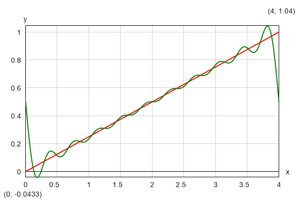

- ®
- 34-36 Peyo Yavorov blvd, Sofia 1164, Bulgaria
- +359 2 423 4455
- proektsoft.bg@gmail.com
 Calcpad VM
Calcpad VM
Version 7.0 Readme!
About Calcpad VM
Calcpad is free software for mathematical and engineering calculations. It represents a flexible and modern programmable calculator with Html report generator. It is simple and easy to use, but it also includes many advanced features:
- real and complex numbers;
- units of measurement (SI, Imperial and USCS);
- vectors and matrices: rectangular, symmetric, column, diagonal, upper/lower triangular;
- custom variables and units;
- built-in library with common math functions;
- vectors and matrix functions:
- data functions: search, lookup, sort, count, etc.;
- aggregate functions: min, max, sum, sumsq, srss, average, product, (geometric) mean, etc.;
- math functions: norm, condition, determinant, rank, trace, transpose, adjugate and cofactor, inverse, factorization (Cholesky, ldlt, lu, qr and svd), eigenvalues/vectors and linear systems of equations;
- custom functions of multiple parameters f(x; y; z; …);
- powerful numerical methods for root and extremum finding, numerical integration and differentiation;
- finite sum, product and iteration procedures;
- modules, macros and string variables;
- program flow control with conditions and loops;
- "titles" and 'text' comments in quotes;
- support for Html and CSS in comments for rich formatting;
- function plotting, images, tables, parametric SVG drawings, etc.;
- automatic generation of Html forms for data input;
- professional looking Html reports for viewing printing;
- export to Word (*.docx) and PDF documents;
- variable substitution and smart rounding of numbers;
- output visibility control and content folding;
- support for plain text (*.txt, *.cpd) and binary (*.cpdz) file formats.
This software is developed using the C# programming language and latest computer technologies. It automatically parses the input, substitutes the variables, calculates the expressions and displays the output. All results are sent to a professional looking Html report for viewing and printing.

Fields of application
This software is suitable for engineers and other professionals that need to perform repetitive calculations and present them in official documentation such as calculation notes. They can automate this task efficiently by creating powerful and reliable Calcpad worksheets. It can also help teachers to prepare calculation examples, papers, manuals, books etc. Students can use it to solve various problems, prepare homework, PhD theses etc.
Installation
Installation is performed by the automated setup program calcpad-setup-en-x64.exe. Follow the instruction of the setup wizard. The software requires a 64-bit computer with Windows 10/11 and Microsoft .NET 8.0.
Licensing and terms of use
This software is free for both commercial and non-commercial use. It is distributed under the MIT license:
Copyright © 2024 PROEKTSOFT EOOD®
Permission is hereby granted, free of charge, to any person obtaining a copy of this software and associated documentation files (the "Software"), to deal in the Software without restriction, including without limitation the rights to use, copy, modify, merge, publish, distribute, sublicense, and/or sell copies of the Software, and to permit persons to whom the Software is furnished to do so, subject to the following conditions:
The above copyright notice and this permission notice shall be included in all copies or substantial portions of the Software.
THE SOFTWARE IS PROVIDED "AS IS", WITHOUT WARRANTY OF ANY KIND, EXPRESS OR IMPLIED, INCLUDING BUT NOT LIMITED TO THE WARRANTIES OF MERCHANTABILITY, FITNESS FOR A PARTICULAR PURPOSE AND NONINFRINGEMENT. IN NO EVENT SHALL THE AUTHORS OR COPYRIGHT HOLDERS BE LIABLE FOR ANY CLAIM, DAMAGES OR OTHER LIABILITY, WHETHER IN AN ACTION OF CONTRACT, TORT OR OTHERWISE, ARISING FROM, OUT OF OR IN CONNECTION WITH THE SOFTWARE OR THE USE OR OTHER DEALINGS IN THE SOFTWARE.
The source code is available on GitHub:
https://github.com/Proektsoftbg/Calcpad
or in our SourceForge repository:
https://sourceforge.net/p/calyx/code/ci/master/tree/
Any scripts, developed with Calcpad are property of the respective authors. They can be used without additional limitations except those appointed by the authors themselves.
Acknowledgments
This project uses some additional third-party components, software and design. They are re-distributed free of charge, under the license conditions, provided by the respective authors.
1. The new and beautiful icons are created using icons8.com.
2. The pdf export was made possible thanks to the wkhtmltopdf.org project.
3. Some symbols are displayed, using the Jost* font family by indestructible type*, under the SIL open font license. Square brackets are slightly modified to suit the application needs.
How it works
The software is quick and easy to use. Just follow these simple steps:
- Enter text and formulas into the "Code" box on the left.
- Press F5 or click
 to calculate. Results will appear in the "Output" box on the right as a professionally formatted Html report.
to calculate. Results will appear in the "Output" box on the right as a professionally formatted Html report. - Click to print or
 to copy the output.
to copy the output.
You can also export it to Html , PDF
, PDF  or MS Word
or MS Word  document.
document.
The program can be used in two different modes:
- Calculator - the source code is available for editing in the left box. After calculations, the results are displayed into the right box. This mode is suitable for short and simple problems without complex formatting.
- Input Form - the source code is not accessible. Instead, an Html input form is displayed. It contains input fields for all parameters, required for the calculations. The remaining content is locked for editing. This mode is more convenient for complex problems with rich formatting, that are frequently used. It makes clear which are the required input parameters and protects the source code from accidental damage.
In "Input Form" mode, you need to fill the input data and click the  button. You can create such a from very easy, directly out of the source code. Just put the "?" symbol wherever you need to enter a value. Then save the problem as "*.cpd" file. You can find additional information about forms further in this manual.
button. You can create such a from very easy, directly out of the source code. Just put the "?" symbol wherever you need to enter a value. Then save the problem as "*.cpd" file. You can find additional information about forms further in this manual.
Theoretical background
(you can skip this if you find it boring)
How does Calcpad actually work? There is a sophisticated math parser inside, that does most of the job. First, the source code is scanned and the sequence of bytes is converted into a list of tokens, using lexical analysis. Each token is represented by data and type (purpose, role).
Then the parser checks if all tokens are in the correct order. We need to know if the expression is mathematically correct and can be computed. Otherwise, a comprehensible error message should be generated. For example, "3 + a / 5" is a correct expression and "3 a + / 5" is not. For that purpose, the standard mathematical notation is represented by a formal language with context-free grammar and syntax analysis is used.
Arithmetic expressions are usually written in infix notation. It means that each operator is located between the respective operands (e.g. "5*3 + 2"). The problem is that, unlike humans, computers are difficult to understand such expressions. The main problems are the operator precedence and the use of brackets. For example, the above expression makes "17", while "5*(3 + 2)" makes "25". That is why, the expression is converted into different type of notation, called "postfix" or Reverse Polish Notation (RPN). It is very easy for a computer to read this one. For example, the expression "5*(3 + 2)" is written in RPN as "5 3 2 + *". The main advantage is that the order of operations can be clearly specified without the need of brackets.
There is a simple and powerful algorithm for evaluation of expressions, written in reverse polish notation (RPN). It is used by almost all calculators. However, Calcpad includes additional functionality for processing parameters, functions, macros, conditional execution, loops, etc.
This was a brief and simple explanation. If you are more curious about these topics, you can find additional information in specialized books, papers or websites. Wikipedia is a good place to start with:
https://en.wikipedia.org/wiki/Parsing
https://en.wikipedia.org/wiki/Lexical_analysis
https://en.wikipedia.org/wiki/Context-free_grammar
https://en.wikipedia.org/wiki/Shunting-yard_algorithm
https://en.wikipedia.org/wiki/Reverse_Polish_notation
Writing code
Enter the code into the "Code" input window. Spacing and indent are maintained automatically. You can use the computer keyboard or the "Numeric Keypad" below. You can copy text from and to the input window or any external program (e.g. Word). There is a toolbar above the input window with some useful editing commands: Copy, Paste, Undo, Redo and Insert Image.
The source code is logically divided into lines, which are numbered automatically. Each expression should be on a separate line. By exception, it is possible to have several expressions on the same line, but they must be separated by comments. When you finish the line, press "Enter" to start a new line. Syntax highlighting is performed automatically. Different code elements are displayed with different colors depending on their type. For example, comments are colored in green and errors are colored in red. All comments must be enclosed in quotes. They can include both plain text and Html. You can use Html to add pictures, tables and format the report.
Numeric Keypad
The numeric keypad is useful when you work on a tablet or laptop with touch screen. When you press a button, the respective symbols are inserted at the place of the cursor. The keypad is separated into four sections: "Numbers", "Operators", "Functions" and "Other". The "=" key does not calculate the answer as on simple calculators. This is the assignment operator (e.g. "a = 4"). If you need to check the equality of two numbers, use the "≡" operator (for example, "a ≡ b" means: "Is a equal to b?"). The "e", "π" and "g" keys insert the respective built-in constants e ≈ 2.7183, π ≈ 3.1416 and g ≈ 9.8066.
If you don't need the keypad and want to free some space, you can hide it with the button. Click again to show the keypad back.
The "C" button deletes the previous symbol and "AC" deletes a whole line. If you double click this button, you will clear the whole text. If you have done this accidentally, you can use Undo  to restore.
to restore.
Moving inside the text
Writing and editing text in Calcpad is not much different than any other Windows program. If you have some experience in that, you can skip this and go straight to "Expressions".
You can type at arbitrary position inside the text. The place where symbols are inserted is called "text cursor" (the blinking vertical line "|"). You can change the cursor position by clicking with the mouse or using the arrows "← → ↑ ↓" from the keyboard. Arrows will move the cursor one symbol left or right and one line up or down. If you hold the "Ctrl" key and press an arrow, the cursor will move with a whole word. "Home" and "End" keys will send you to the beginning or the end of the current line, respectively. If you hold "Ctrl" beforehand, you will go to the beginning or the end of the entire text.
Selecting text
Most editing commands require you to select some text to which the command will be applied. The selected text is usually displayed with blue background (it may look different depending on your system settings). You can select text with the mouse as follows: Press the left mouse button at the start position of the text to be selected. Hold the button and move the mouse to the end position. Then release the button. Alternatively, you can click at the start, press Shift and then click at the end. You can also use the computer keyboard. Hold Shift and press arrows or "Home", "End", "Page Up", "Page Down".
Deleting text
You can delete a single symbol by pressing the "Delete" ("Del") or "Backspace" ("Bkspc") keys. The difference is that "Delete" removes the symbol after the cursor, and "Backspace" - before the cursor. If you hold "Ctrl" beforehand, you can delete whole words instead of separate symbols. If you need to delete a larger part of the text, you can select it and press either "Delete" or "Backspace" after that.
Copy
If some part of the text is repeated, you can copy it instead of typing it again. That requires two steps: "Copy" and "Paste". At the first step (Copy), the selected text is sent to memory called Clipboard. At the second step (Paste), the text is inserted at the new places. Once copied, you can paste the text at multiple places.
You can copy the selected text to the Clipboard by pressing "Ctrl+C" or by clicking the  button.
button.
Paste
Before you paste a text from the Clipboard you have to position the cursor at the required place. Then press "Ctrl+V" or the  button. You can copy text from Calcpad and paste it to other programs and vice-versa. For example, you can take some formulas from Word, calculate them in Calcpad and return the results back to Word.
button. You can copy text from Calcpad and paste it to other programs and vice-versa. For example, you can take some formulas from Word, calculate them in Calcpad and return the results back to Word.
Undo
This command undoes the result from the last editing command and restores the previous state. You can undo up to 10 steps back. Just press "Ctrl+Z" or click the  button.
button.
Redo
"Redo" performs in the opposite way to "Undo". It restores a command that has been undone. Redo must follow immediately the last Undo. If you enter or edit some text meanwhile, you will lose the ability to redo. Click the  button to redo.
button to redo.
Find
You can search for a certain text inside the code and replace it with another, if needed. Select the "Edit/Find" menu, click the  button or press "Ctrl+F". The "Find And Replace" dialog will appear.
button or press "Ctrl+F". The "Find And Replace" dialog will appear.
Enter a word or phrase to search for and click "Find Next". The program starts from the current position and finds the first occurrence in the selected direction. If the searched phrase is found, it is highlighted, and the search is stopped. To find the next occurrence, click "Find Next" again. You can also press "F3" to continue searching even after you close the dialog.
If you need to replace the searched text, click the "Replace" tab and fill in the "Replace with" box. Then click the "Replace" button. The program will replace the current occurrence and will automatically move to the next one. If you want to replace all occurrence in the code, click the respective button instead.
There are several options that affect the search results, as follows:
- Direction: "Up", "Down" and "All". Both "All" and "Down" search towards the end of the document. The difference is that "All" jumps to the beginning and starts over, after it reaches the end of the document.
- Selection: It works only with the "Replace All" command. You need to make the selection first and then to display the "Find And Replace" dialog. Then, if you check the "Selection" options, all the replacements will be made only inside the selected text.
- Match case: If selected, the search will make difference between capital and small letters. By default, the case is neglected.
- Whole words: If selected, the program will search only for sequences that represent whole words.
Coding aids
Syntax highlighting
Syntax highlighting applies different colors to different components of the programming language: functions, variables, operators, etc. It runs automatically in the background, each time you edit and leave the current line. All errors are highlighted in red. The program makes difference between defined and undefined variables and functions. The color palette is predefined and cannot be changed. Currently, Calcpad does not support custom styles and themes.
Auto-indentation
The indentation of the separate lines in the code is maintained automatically by the program. All lines that are inside conditional and loop blocks are indented accordingly. Additionally, you can add spaces at the beginning of each line. Although spacing is also handled automatically, the leading spaces are not affected.
Auto-complete
When you start typing, the program displays a drop-down list with suggestions that match what you have just typed. It contains keywords, units of measurement, built in function and all custom variables and functions that are defined above the current line. The list is dynamically filtered and sorted while you are typing. The current suggestion in the list is highlighted. If that is what you need, just press "Tab" to insert it at the current position. Click on the list to insert some of the other suggestions. Alternatively, you can press "Down Arrow" to browse the available suggestions and "Enter" to insert the selected one. If the list is above the current line, press "Up Arrow" instead.
Bracket matching
The program can find the matching opening and closing brackets. If you position the cursor next or before one of them, both brackets are highlighted. If there is no corresponding bracket, nothing is highlighted.
Greek letters
You can insert Greek letters by clicking the respective symbol below the code editor. Alternatively, type the Latin equivalent from the table below and press "Ctrl+G". If you press it again, you will convert the letter back from Greek to Latin. Since "j"/"J" and "V" remain unused, they are mapped to "ø"/"Ø" and "∡", respectively.
| Name | greek | latin | Greek | Latin |
|---|---|---|---|---|
| alpha | α | a | Α | A |
| beta | β | b | Β | B |
| gamma | γ | g | Γ | G |
| delta | δ | d | Δ | D |
| epsilon | ε | e | Ε | E |
| zeta | ζ | z | Ζ | Z |
| eta | η | h | Η | H |
| theta | θ | q | Θ | Q |
| theta-alt | ϑ | v | ∡ | V |
| iota | ι | i | Ι | I |
| kappa | κ | k | Κ | K |
| lambda | λ | l | Λ | L |
| mu | μ | m | Μ | M |
| nu | ν | n | Ν | N |
| xi | ξ | x | Ξ | X |
| omicron | ο | o | Ο | O |
| pi | π | p | Π | P |
| rho | ρ | r | Ρ | R |
| sigma | σ | s | Σ | S |
| tau | τ | t | Τ | T |
| upsilon | υ | u | Υ | U |
| phi | φ | f | Φ | F |
| chi | χ | c | Χ | C |
| psi | ψ | y | Ψ | Y |
| omega | ω | w | Ω | W |
| phi-diam | ø | j | Ø | J |
Using Notepad++
Notepad++ is a popular text/code editor. It is free and open source and can be downloaded from the official website https://notepad-plus-plus.org. It supports many programming or scripting languages. Its text editing capabilities are much more powerful than Calcpad. It is also very useful for writing Html code. Calcpad syntax can be also used with Notepad++. It is predefined as an XML file that can be inserted in Notepad++. You can do this by selecting the "Language" menu, then click "Define your language" and then, "Import…". Find the Calcpad folder inside your Program Files directory or wherever Calcpad is installed and select the file named Calcpad-syntax-for-Notepad++.xml.
Expressions
The main purpose of Calcpad is to perform calculations. That is why, everything inside the input window is assumed to be mathematical expressions, unless it is enclosed in quotes. Then it is treated as comments. By default, each expression has to be in a separate line, e.g.:
2 + 35*(3+1)15/2
You must not add "=" at the end of each expression. This is the assignment operator. It is used to assign values to variables, e.g. "a = 2". Press the  button, to see the results in the output window:
button, to see the results in the output window:
2 + 3 = 55∙(3 + 1) = 2015/2 = 7.5
Alternatively, you can have several expressions in a single line, but they must be separated by comments, e.g.:
'Length -'a = 3 m', Width -'b = 2*a', Height -'c = 5 m
Each expression can include constants (numbers), variables, operators, functions and brackets. They must be arranged properly in order to represent a valid expression. The commonly accepted mathematical notation and operator precedence is used as it is taught in school. Detailed description of the expression components is provided below.
You can calculate separate unrelated expressions as with simple calculator or write a complete program that solves a specific problem. You can define variables and assign values to them. Further, you can use them to define other variables and so on until you reach the final result. You can also add text, Html and images to create detailed and professional-looking calculation report. You can save it to a file and use it multiple times to solve similar problems. below, you can see a sample program for solving a quadratic equation:

Constants
Real
Real constants can be positive and negative integer and decimal numbers. They can include digits "0" - "9" and decimal point ".". You can also enter numbers as fractions like "3/4". However, the program will treat them as expressions (division of two numbers). You cannot define numbers in floating point format: "3.4e+6". You have to use an expression like "3.4*10^6" instead.
All constants and variables are internally stored as "double-precision floating point" numbers. Their values are ranged from -1.7976931348623157E+308 to 1.7976931348623157E+308. If a result is out of the above interval, the program returns "-∞" or "+∞, respectively". Division by zero gives the same result, but "0/0" = "Undefined". The smallest positive number is 4.94065645841247E-324. Smaller values are rounded exactly to 0.
Complex
If you select "Complex" mode, you can use complex numbers in calculations. Otherwise, only real arithmetic is applied. Each complex number is represented by the ordered couple (a; b), where "a" is real number, and "b = |b|i" is called "imaginary". It can be written in so called algebraic form: ±a ± bi (e.g. "2 + 3i"). You can also use other forms, such as polar or exponential from, by entering the respective expressions. In Calcpad, the imaginary unit can be entered either as "i" or "1i" in case you have a variable named "i". The imaginary unit is a special number that satisfies the expression i 2 = -1.
Variables
A variable is defined by its name and value using expressions like "a = 4". The "=" symbol is the assignment operator. On the left side, only a single variable name is allowed. On the right side, you can have any valid mathematical expression, e.g. "b = a + 4". A variable "lives" from the place of its definition to the end of the program. That is why you cannot use a variable before it is defined. This will raise an error. If you redefine an existing variable with a new value, it will replace the old one and the new value will be used further on.
Variable names can include small or capital Latin letters "a" - "z", "A" - "Z", Greek letters "α" - "ω", "Α" - "Ω" and digits. Names are case sensitive. For example, "a" and "A" are different variables. A name must start with a letter or ∡. You can also use "," (comma), "‾" (overline), "_" (underscore), superscripts: " ⁰ " - " ⁹ ", " ⁿ ", " ⁺ ", " ⁻ " and other symbols: " ′ ", " ″ ", " ‴ ", " ⁗ ", " ø ", "Ø", " ° ", "∡". The first occurrence of an underscore in a name starts a subscript. For example, "a_1_1" will be formatted as "a1_1". Variables can store either real or complex numbers (in "Complex" mode).
Operators
The following operators are supported by the Calcpad language:
-
Arithmetic:
- "!" - factorial;
- "^" - exponentiation;
- "/" - floating point division;
- "\" - integer division;
- "÷" - division bar;
- "⦼" - modulo (%%, remainder);
- "*" - multiplication;
- "-" - subtraction;
- "+" - addition;
-
Relational (comparison):
- "≡" - equal to (==);
- "≠" - unequal to (!=);
- "<" - less then;
- ">" - greater than;
- "≤" - less or equal (<=);
- "≥" - greater or equal (>=);
-
Logical:
- "∧" - logical "and";
- "∨" - logical "or";
- "⊕" - logical “xor”;
- "=" - assignment.
Operator shortcuts
Instead of "≡", "≠", "≤"- and "≥", you can use the respective C-style equivalent operators, as follows: "==", "!=", "<=" and ">=". They will be automatically replaced by the corresponding Calcpad operators. The shortcut “%%” will be converted to the modulo operator “⦼”. This is necessary because “%” is reserved for the percent units. Since this symbol is not very common, it is rendered as “mod” in the output, e.g. “7 mod 5 = 2”, instead of “7 ⦼ 5 = 2”.
Operator precedence and associativity
The above operators are listed in the order of their precedence. This is the order they will be evaluated in an expression. When you have different types of operators in a single expression, exponentiation will be evaluated first, then division and multiplication, subtraction and addition and comparison will be the last. When we have a unary minus and exponentiation, the exponentiation is evaluated first. For example: "-2^2 = -(2^2) = -4" All relational operators are of equal precedence. If you need to change the order of evaluation, you can use brackets. For example, "5 + 2∙3" makes "11". If the addition has to be first, write "(5 + 2)∙3". You will get "7∙3 = 21". Operators with equal precedence are evaluated from left to right. This is called operator associativity. For example, "3 - 2 + 1" makes "(3 - 2) + 1 = 2" and not "3 - (2 + 1) = 0". Another good example is "2∙3 / 2∙3", which makes "9" and not "1".
All operators in Calcpad are left-associative (calculations are performed from left to right). The only exception is exponentiation, which is right-associative. It is performed from right to left, which means that x^a^b will be evaluated as xab. However, many hand calculators and spreadsheet software like Excel use left associativity for exponentiation. In this case x^a^b will be evaluated as xa·b. If you need to have xab, you will have to add brackets: x^(a^b).
Relational expressions
Relational operators can return only two values: "1" for "true" and "0" for "false". You can use them in expressions along with arithmetic operators. For example, you can get the greater of two numbers a and b by the expression: "a*(a ≥ b) + b*(a < b)". But you need to be careful. If you use "≤" instead of "<", for the case of a equal to b, you will get a + b, which may be not exactly what you want. For that special purpose, it is better to use the built-in function max(a; b), logical operators or conditional execution (look further in this manual). Arithmetic operators are of higher precedence than relational, and both are evaluated before logical ones.
Logical expressions
Calcpad operates only with numerical data and does not have special types for boolean data. Similar to relational ones, logical operators also use "1" for "true" and "0" for "false". Any input value, different than 0 is also assumed to be "true". You can build logical expressions by using logical operators and/or logical functions (see further in this manual). They work as follows:
- "∧" (and) returns 1 if both operands are 1 and 0 otherwise;
- "∨" (or) returns 1 if any of the operands is 1 and 0 if both are 0;
- "⊕" (xor) returns 1 if just one of the operands is 1 and 0 otherwise.
The results from the above operators are presented in the following tables:
|
And
|
Or
|
Xor
|
Complex arithmetic
All operators support complex numbers except for factorial "!", integer division "\", remainder "⦼" and comparison: "<", "≤", ">", "≥". The evaluation of a complex expression is a little bit more difficult than real. The rules for the basic complex operations are given below:
- Addition:
(a + bi) + (c + di) = (a + c) + (b + d)i; - Subtraction:
(a + bi) − (c + di) = (a − c) + (b − d)i; - Multiplication:
(a + bi)·(c + di) = (ac − bd) + (bc + ad)i; - Division:
(a + bi)/(c + di) = (ac + bd)/(c2 + d2) + (bc − ad)/(c2 + d2)i;
Brackets
Brackets are used in two cases: to change the order of calculations and to enclose arguments of functions. Only round brackets are allowed: "(" and ")". The software checks if the following rules are satisfied for each expression:
- The first bracket in an expression must be a left one;
- The count of left and right brackets must be equal;
- Only operator or function identifier are allowed before a left bracket;
- Right bracket is not allowed after operator or function identifier;
- A function identifier always must be followed by a left bracket.
Calcpad uses "smart" bracket insertion while rendering the output. It means that brackets, which are duplicate or do not affect the order of calculations, are omitted from the output. On the other hand, there are places where brackets are added for clarity, although not required in the input. It happens mostly when negative or complex variables are substituted. For example:
- If a = -2, then a2 = (-2)2 = 4, and not a2 = -22. The second case is ambiguous and the sign can be applied after the exponentiation which will evaluate to -4. Also, brackets are added to exponentiation of a complex variable;
- If a = -2, then b = -a = -(-2) = 2, and not b = -a = --2 = 2;
- Brackets are also added in the case of multiplication and division to a negative variable: a·b = -2·(-3) = 6;
- Brackets are required almost every time we have to substitute complex variables: a·b = (2 + 3i)·(3 - 2i) = 12 + 5i.
Functions
Library (built-in) functions
Calcpad includes a library with common math functions, ready to use:
-
Trigonometric:
sin(x)- sine;cos(x)- cosine;tan(x)- tangent =sin(x)/cos(x), for each x ≠ kπ, k=1, 2, 3…;csc(x)- cosecant =1/sin(x), for each x ≠ kπ, k=1, 2, 3…;sec(x)- secant =1/cos(x), for each x ≠ π/2 + kπ, k=1, 2, 3…;cot(x)- cotangent =cos(x)/sin(x), for each x ≠ π/2 + kπ, k=1, 2, 3…;
-
Hyperbolic:
sinh(x)- hyperbolic sine =(ex - e-x)/2;cosh(x)- hyperbolic cosine =(ex + e-x)/2;tanh(x)- hyperbolic tangent =(ex - e-x)/(ex + e-x);csch(x)- hyperbolic cosecant =1/sinh(x);sech(x)- hyperbolic secant =1/cosh(x);coth(x)- hyperbolic cotangent =(ex + e-x)/(ex - e-x), for x ≠ 0;
-
Inverse trigonometric:
asin(x)- inverted sine, defined for -1 ≤ x ≤ 1;acos(x)- inverted cosine, defined for -1 ≤ x ≤ 1;atan(x)- inverted tangent;atan2(x; y)- the angle whose tangent is the quotient of y and x;acsc(x)- inverted cosecant =asin(1/x);asec(x)- inverted secant =acos(1/x);acot(x)- inverted cotangent;
-
Inverse hyperbolic:
asinh (x)- inverted hyperbolic sine =ln(x + √x2 + 1), defined for -∞ ≤ x ≤ +∞;acosh(x)- inverted hyperbolic cosine =ln(x + √x + 1·√x - 1), defined for x ≥ 1;atanh(x)- inverted hyperbolic tangent =1/2·ln[(1 + x)/(1 - x)], for -1 < x < 1;acsch(x)- inverted hyperbolic cosecant =atanh(1/x);asech(x)- inverted hyperbolic secant =acosh(1/x);acoth(x)- inverted hyperbolic cotangent =1/2·ln[(x + 1)/(x - 1)], for |x| > 1;
-
Logarithmic, exponential and roots:
log(x)- decimal logarithm (with base 10), for each x > 0;ln(x)- natural logarithm (with base e ≈ 2.7183), for each x > 0;log_2(x)- binary logarithm (with base 2), for each x > 0;exp(x)- exponential function = e ˣ;sqr(x)orsqrt(x)- square root (√x ), defined for each x ≥ 0;cbrt(x)- cubic root ( 3√x );root(x; n)- n-th root ( n√x );
-
Rounding:
round(x)- rounds to the nearest integer;floor(x)- rounds to the smaller integer (towards -∞);ceiling(x)- rounds to the greater integer (towards +∞);trunc(x)- rounds to the smaller integer (towards zero);
-
Integer:
mod(x; y)- the remainder of an integer division;gcd(A; ⃗b; c…)- the greatest common divisor of several integers;lcm(A; ⃗b; c…)- the least common multiple of several integers;
-
Complex:
abs(x)- absolute value (modulus) of a real number | x |;abs(a + bi)- complex modulus = sqrt(a2 + b2);re(a + bi)- returns the real part only, re(a + bi) = a;im(a + bi)- returns the imaginary part as a real number, im(a + bi) = b;phase(a + bi)- complex number phase (argument) = atan2(a; b).
-
Aggregate and interpolation:
min(A; ⃗b; c…)- the smallest of multiple values;max(A; ⃗b; c…)- the greatest of multiple values;sum(A; ⃗b; c…)- sum of multiple values;sumsq(A; ⃗b; c…)- sum of squares;srss(A; ⃗b; c…)- square root of sum of squares;average(A; ⃗b; c…)- average of multiple values;product(A; ⃗b; c…)- product of multiple valuesmean(A; ⃗b; c…)- geometric mean;take(n; A; ⃗b; c…)- the n-th element from the list;line(x; A; ⃗b; c…)- performs linear interpolation among the specified values for parameter x;spline(x; A; ⃗b; c…)- performs Hermite spline interpolation;
-
Conditional and logical:
if(<cond>; <value-if-true>; <value-if-false>)- if the condition cond is satisfied, the function returns the first value, otherwise it returns the second value. The condition is satisfied when it evaluates to any non-zero number;switch(<cond1>; <value1>; <cond2>; <value2>;…; <default-value>)- returns the value for which the respective condition is satisfied. Conditions are checked from left to right. If none is satisfied, it returns the default value in the end;not(x)- logical "not";and(A; ⃗b; c…)- logical "and";or(A; ⃗b; c…)- logical "or";xor(A; ⃗b; c…)- logical "xor";
-
Other:
sign(x)- sign of a number = -1, if x < 0; 1, if x > 0; 0, if x = 0;
random(x)- a random number between 0 and x.
- Creational:
vector(n)- creates an empty vector with length n;fill(⃗v; x)- fills vector ⃗v with value x;range(x1; xn; s)- creates a vector with values spanning from x1 to xn with step s;
- Structural:
len(⃗v)- returns the length of vector ⃗v;size(⃗v)- the actual size of vector ⃗v (the index of the last non-zero element);resize(⃗v; n)- sets a new length n of vector ⃗v;join(A; ⃗b; c…)- creates a vector by joining the arguments in the list - matrices, vectors and scalars;slice(⃗v; i1; i2)- returns the part of vector ⃗v, bounded by indexes i1 and i2, inclusively;first(⃗v; n)- the first n elements of vector ⃗v;last(⃗v; n)- the last n elements of vector ⃗v;extract(⃗v; ⃗i)- extracts the elements from ⃗v which indexes are contained in ⃗i;
- Data:
sort(⃗v)- sorts the elements of vector ⃗v in ascending order;rsort(⃗v)- sorts the elements of vector ⃗v in descending order;order(⃗v)- the indexes of vector ⃗v, by ascending order of its elements;revorder(⃗v)- the indexes of vector ⃗v, by descending order of its elements;reverse(⃗v)- a vector containing the elements of ⃗v in reverse order;count(⃗v; x; i)- number of elements of vector ⃗v, after the i-th incl., that are equal to x;search(⃗v; x; i)- the index of the first element in ⃗v, after the i-th incl., that is equal to x;find(⃗v; x; i)orfind_eq(⃗v; x; i)- the indexes of all elements in ⃗v, after the i-th incl., that are = x;find_ne(⃗v; x; i)- the indexes of all elements in ⃗v, after the i-th incl. that are ≠ x;find_lt(⃗v; x; i)- the indexes of all elements in ⃗v, after the i-th incl., that are < x;find_le(⃗v; x; i)- the indexes of all elements in ⃗v, after the i-th incl., that are ≤ x;find_gt(⃗v; x; i)- the indexes of all elements in ⃗v, after the i-th incl., that are > x;find_ge(⃗v; x; i)- the indexes of all elements in ⃗v, after the i-th incl., that are ≥ x;lookup(⃗a; ⃗b; x)orlookup_eq(⃗a; ⃗b; x)- all elements in ⃗a for which the corresponding elements in ⃗b are = x;lookup_ne(⃗a; ⃗b; x)- all elements in ⃗a for which the corresponding elements in ⃗b are ≠ x;lookup_lt(⃗a; ⃗b; x)- all elements in ⃗a for which the corresponding elements in ⃗b are < x;lookup_le(⃗a; ⃗b; x)- all elements in ⃗a for which the corresponding elements in ⃗b are ≤ x;lookup_gt(⃗a; ⃗b; x)- all elements in ⃗a for which the corresponding elements in ⃗b are > x;lookup_ge(⃗a; ⃗b; x)- all elements in ⃗a for which the corresponding elements in ⃗b are ≥ x;
- Math:
norm_1(⃗v)- L1 (Manhattan) norm of vector ⃗v;norm(⃗v)ornorm_2(⃗v)ornorm_e(⃗v)- L2 (Euclidean) norm of vector ⃗v;norm_p(⃗v; p)- Lp norm of vector ⃗v;norm_i(⃗v)- L∞ (infinity) norm of vector ⃗v;unit(⃗v)- the normalized vector ⃗v (with L2 norm = 1);dot(⃗a; ⃗b)- scalar product of two vectors ⃗a and ⃗b;cross(⃗a; ⃗b)- cross product of two vectors ⃗a and ⃗b (with length 2 or 3);
- Creational:
matrix(m; n)- creates an empty matrix with dimensions m⨯n;identity(n)- creates an identity matrix with dimensions n⨯n;diagonal(n; d)- creates a diagonal n⨯n matrix and fills the diagonal with value d;column(m; c)- creates a column matrix with dimensions m⨯1, filled with value c;utriang(n)- creates an upper triangular matrix with dimensions n⨯n;ltriang(n)- creates a lower triangular matrix with dimensions n⨯n;symmetric(n)- creates a symmetric matrix with dimensions n⨯n;vec2diag(⃗v)- creates a diagonal matrix from the elements of vector ⃗v;vec2col(⃗v)- creates a column matrix from the elements of vector ⃗v;join_cols(⃗c1; ⃗c2; ⃗c3…)- creates a new matrix by joining column vectors;join_rows(⃗r1; ⃗r2; ⃗r3…)- creates a new matrix by joining row vectors;augment(A; ⃗b; c…)- creates a new matrix by appending matrices A; ⃗b; c… side by side;stack(A; ⃗b; c…)- creates a new matrix by stacking matrices A; ⃗b; c… one below the other;
- Structural:
n_rows(M)- number of rows in matrix M;n_cols(M)- number of columns in matrix M;mresize(M; m; n)- sets new dimensions m and n for matrix M;mfill(M; x)- fills matrix M with value x;fill_row(M; i; x)- fills the i-th row of matrix M with value x;fill_col(M; j; x)- fills the j-th column of matrix M with value x;copy(A; B; i; j)- copies all elements from A to B, starting from indexes i and j of B;add(A; B; i; j)- adds all elements from A to those of B, starting from indexes i and j of B;row(M; i)- extracts the i-th row of matrix M as a vector;col(M; j)- extracts the j-th column of matrix M as a vector;extract_rows(M; ⃗i)- extracts the rows from matrix M whose indexes are contained in vector ⃗i;extract_cols(M; ⃗j)- extracts the columns from matrix M whose indexes are contained in vector ⃗j;diag2vec(M)- extracts the diagonal elements of matrix M to a vector;submatrix(M; i1; i2; j1; j2)- extracts a submatrix of M, bounded by rows i1 and i2 and columns j1 and j2, incl.;
- Data:
sort_cols(M; i)- sorts the columns of M based on the values in row i in ascending order;rsort_cols(M; i)- sorts the columns of M based on the values in row i in descending order;sort_rows(M; j)- sorts the rows of M based on the values in column j in ascending order;rsort_rows(M; j)- sorts the rows of M based on the values in column j in descending order;order_cols(M; i)- the indexes of the columns of M based on the ordering of the values from row i in ascending order;revorder_cols(M; i)- the indexes of the columns of M based on the ordering of the values from row i in descending order;order_rows(M; j)- the indexes of the rows of M based on the ordering of the values in column j in ascending order;revorder_rows(M; j)- the indexes of the rows of M based on the ordering of the values in column j in descending order;mcount(M; x)- number of occurrences of value x in matrix M;msearch(M; x; i; j)- vector with the two indexes of the first occurrence of x in matrix M, starting from indexes i and j;mfind(M; x)ormfind_eq(M; x)- the indexes of all elements in M equal to x;mfind_ne(M; x)- the indexes of all elements in M not equal to x;mfind_lt(M; x)- the indexes of all elements in M less than x;mfind_le(M; x)- the indexes of all elements in M less than or equal to x;mfind_gt(M; x)- the indexes of all elements in M greater than x;mfind_ge(M; x)- the indexes of all elements in M greater than or equal to x;hlookup(M; x; i1; i2)orhlookup_eq(M; x; i1; i2)- the values from row i2 of M, for which the elements in row i1 are equal to x;hlookup_ne(M; x; i1; i2)- the values from row i2 of M, for which the elements in row i1 are not equal to x;hlookup_lt(M; x; i1; i2)- the values from row i2 of M, for which the elements in row i1 are less than x;hlookup_le(M; x; i1; i2)- the values from row i2 of M, for which the elements in row i1 are less than or equal to x;hlookup_gt(M; x; i1; i2)- the values from row i2 of M, for which the elements in row i1 are greater than x;hlookup_ge(M; x; i1; i2)- the values from row i2 of M, for which the elements in row i1 are greater than or equal to x;vlookup(M; x; j1; j2)orvlookup_eq(M; x; j1; j2)- the values from column j2 of M, for which the elements in column j1 are equal to x;vlookup_ne(M; x; j1; j2)- the values from column j2 of M, for which the elements in column j1 are not equal to x;vlookup_lt(M; x; j1; j2)- the values from column j2 of M, for which the elements in column j1 are less than x;vlookup_le(M; x; j1; j2)- the values from column j2 of M, for which the elements in column j1 are less than or equal to x;vlookup_gt(M; x; j1; j2)- the values from column j2 of M, for which the elements in column j1 are greater than x;vlookup_ge(M; x; j1; j2)- the values from column j2 of M, for which the elements in column j1 are greater than or equal to x;
- Math:
hprod(A; B)- Hadamard product of matrices A and B;fprod(A; B)- Frobenius product of matrices A and B;kprod(A; B)- Kronecker product of matrices A and B;mnorm_1(M)- L1 norm of matrix M;mnorm(M)or
mnorm_2(M)- L2 norm of matrix M;mnorm_e(M)- Frobenius norm of matrix M;mnorm_i(M)- L∞ norm of matrix M;cond_1(M)- condition number of M based on the L1 norm;cond(M)orcond_2(M)- condition number of M based on the L2 norm;cond_e(M)- condition number of M based on the Frobenius norm;cond_i(M)- condition number of M based on the L∞ norm;det(M)- determinant of matrix M;rank(M)- rank of matrix M;trace(M)- trace of matrix M;transp(M)- transpose of matrix M;adj(M)- adjugate of matrix M;cofactor(M)- cofactor matrix of M;eigenvals(M)- eigenvalues of matrix M;eigenvecs(M)- eigenvectors of matrix M;eigen(M)- eigenvalues and eigenvectors of matrix M;cholesky(M)- Cholesky decomposition of a symmetric, positive-definite matrix M;lu(M)- LU decomposition of matrix M;qr(M)- QR decomposition of matrix M;svd(M)- singular value decomposition of M;inverse(M)- inverse of matrix M;lsolve(A; b)- solves the system of linear equations A⃗x = ⃗b using LDLT decomposition for symmetric matrices, and LU for non-symmetric;clsolve(A; b)- solves the linear matrix equation A⃗x = ⃗b with symmetric, positive-definite coefficient matrix A using Cholesky decomposition;msolve(A; B)- solves the generalized matrix equation AX = B using LDLT decomposition for symmetric matrices, and LU for non-symmetric;cmsolve(A; B)- solves the generalized matrix equation AX = B with symmetric, positive-definite coefficient matrix A using Cholesky decomposition;
take(x; y; M)- returns the element of matrix M at indexes x and y;line(x; y; M)- double linear interpolation from the elements of matrix M based on the values of x and y;spline(x; y; M)- double Hermite spline interpolation from the elements of matrix M based on the values of x and y.
Arguments must be enclosed in round brackets. They can be constants, variables or any valid expression. Multiple arguments must be separated by semicolons ";". When arguments are out of range, the function returns "Undefined". Exceptions from this rule are "cot(0)" and "coth(0)", which return "+∞".
Arguments of trigonometric functions can be in degrees, radians or grades. The units for angles can be specified in three different ways:
1. By the radio buttons above the output window (🔘D, 🔘R, 🔘G).
2. By compiler switches inside the code. You have to insert a separate line containing: #deg for degrees, #rad for radians or #gra for grades. This will affect all expressions after the current line to the end or until an alternative directive is found.
3. By attaching native units to the value itself: deg, °, ′, ″, rad, grad, rev (see the “Units” section, further in this manual).
Native units are of highest priority, followed by compiler switches in source code. Both override radio buttons settings, which are of lowest priority.
All functions are also defined in the complex domain, except for mod(x; y), gcd(x; y), lcm(x; y), min(x; y) and max(x; y).
Logical functions accept numerical values and return “0” for “false” and “1” for “true”. The results for two arguments (one for “not”) are presented in the following tables:
|
|
|
|
Any numerical value, different from 0, is treated as 1 (true). Multiple arguments are evaluated sequentially from left to right, according to the above tables. We start with the first and the second. Then, the obtained result and the next value are evaluated in turn, and so on.
Rounding of midpoint values with round() evaluates to the nearest integer away from zero. The floor() function rounds to the smaller value (towards -∞). The ceiling() function rounds in the opposite direction to the larger value (towards +∞). Unlike floor(), trunc() rounds towards zero, which is equivalent to simply truncating the fractional part. Some examples for rounding of negative and positive numbers are provided in the table below:
|
Positive
|
Negative
|
Rounding of complex numbers affects both real and imaginary parts.
Custom (user defined) functions
You can define your own functions and use them further in the calculations. Custom functions can have unlimited number of parameters. They are specified after the function name, enclosed in brackets "(" … ")" and separated by semicolons ";". Each function is defined, using the following format: "f ( A; ⃗b; c…; … ) = expression", where "f" is the function name and "x", "y" and "z" are function parameters. On the right side you can have any valid expression including constants, operators, variables and even other functions, e.g.:
f(x) = x^2 + 2*x*sin(x)g(x; y) = f(x)/(y - 4)
Once defined, you can use a function in any expression by inserting a function call. Just write the function name and then specify the arguments in brackets, e. g. b = g(a + 2; 3) + 3. Function names must conform to the same rules as variable names. Arguments can be any valid expressions. You have to provide as many arguments as the number of function parameters. The life cycle of a function is from the place of definition to the end of the code. If you define a new function with the same name, the old one will be replaced. You cannot redefine a library function. For example, sin(x) = x^2 will return an error.
It is not necessary to pre-define the variables that are used for parameters. However, if other variables are used inside the function body, they must be defined before the first call to the function. Parameters work as local level variables inside the function body. If a variable with the same name exists outside the function, a call to that function will not rewrite the value of the global variable. For example:
- If you have a variable "x = 4"
- and a function "f(x) = x2".
- When you call "f(2)", it will evaluate to x2 = 22 = 4, because local x = 2
- If you call "x2" after that, it will return x2 = 42 = 16, because global x remains 4.
User defined functions support both real and complex numbers.
Plotting
Besides functions, Calcpad provides special commands for advanced operations. They accept functions and expressions as arguments and perform plotting, iterative solutions and numerical methods. Their names start with "$" to be distinguished from normal functions. Their parameters must be enclosed in curly brackets: "{" and "}". Such is the plotting command $Plot. It can plot a function of one variable in the specified interval. It has the following format:
$Plot{y(x) @ x = a : b}
, where:
- y(x) - the function to be plotted. Instead of y(x) you can put any valid expression. It will be used to calculate the ordinate values;
- x - the name of the variable along the abscissa. You can put here only a single name. It is not required to define the variable preliminary;
- a and b are the limits of the interval for the x variable. Instead of a and b you can put numbers, variables or any valid expressions.
For example, if you enter: $Plot{x^2 - 5*x + 3 @ x = -1:6}, you will get the following result:

The above command plots only one function of one variable at a time. There are also other formats that you can use:
$Plot{x(t)|y(t) @ t = a : b} - parametric plot: both coordinates are functions of a parameter;
$Plot{y1(x) & y2(x) & … @ x = a : b} - multiple: plots several functions on a single graph;
$Plot{x1(t)|y1(t) & x2(t)|y2(t) & … @ t = a : b} - multiple parametric;
$Map{f(x; y) @ x = a : b & y = c : d} - draws a 2D color map of a 3D surface, defined by f(x; y).
The $Plot{…} function must be the first thing in a line. You can have only spaces and tabs before, not even comments. Otherwise, the program will return an error. Any text after the closing bracket "}" will be ignored. Plotting supports only real numbers. You can use it in complex mode, only if x and y are real and the function returns real result along the plotting interval.
You can specify the size of the plot area by defining two variables: PlotWidth and PlotHeight in pixels. The default values are PlotWidth = 400 and PlotHeight = 250.
The $Map{…} function can work with different color palettes. Select the preferred one from the "Palette" combo box on the bottom of the program window. If you select the "Smooth" checkbox, the scale will be displayed as a smooth gradient. Otherwise, the program will draw color strips. You can also add 3D effects to the graph by selecting the "Shadows" checkbox. You can also specify light direction by the respective combo.
Examples of different plotting methods are provided below:
|
Parametric Equation: r(θ) = cos(5/2*θ)$Plot{r(θ)*cos(θ)|r(θ)*sin(θ) @ θ = 0:6*π}
|
Multiple Equation: y1(θ) = cos(θ) - sin(θ)y2(θ) = cos(θ) + sin(θ)$Plot{cos(θ) & y1(θ) & y2(θ) @ θ = 0:π}
|
Result: "rose" curve
|
Result: leaf by three trigonometric functions |
|
Multiple parametric Equation: x(θ) = sqr(θ)*cos(θ)y(θ) = sqr(θ)*sin(θ)$Plot{x(θ)|y(θ) & -x(θ)|-y(θ) @ θ = 0:3*π}
|
Color map Equation: f(x; y) = cos(x/3) + sin(y) - sin(x)*cos(y/4)$Map{f(x; y) @ x = -15 : 15 & y = -15 : 15}
|
Result: double Fermat spiral
|
Result: 2D waves
|
Numerical methods
Calcpad has a built in "Solver" module, which can solve more difficult problems using numerical methods. It can work only with real numbers but not complex. It includes the following functions:
Root finding
$Root{f(x) = const @ x = a : b}
$Root{f(x) @ x = a : b}
It finds a single root for an equation of type "f(x) = const" within the interval [a, b]. If "const" is zero, you can omit "= const". The program uses a hybrid bracketing method, which is a combination of Bisection and Anderson-Bjork's method. It subsequently narrows the interval around the root, until it gets smaller than the specified precision. It is required that the function "f(x) - const" has opposite signs at the ends of the interval. According to the Boltzano's theorem, if the function is continuous within the interval, at least one root exists. The bracketing algorithm will find an approximation after a finite number of iterations.

With this method, you can find only roots where the function crosses the line at "y = const". When "f(x) - const" is entirely positive or negative and only "touches" the line from one side, you cannot find the root by any bracketing method.
If no roots exist inside the initial interval, the program returns an error. If there are several roots, it will find only one of them. In such case, it is better to plot the function first. Then, you can see the approximate location of roots and divide the interval into several parts - one for each root. Finally, you can call the function several times to find all the roots. In some cases, it is possible to develop an automated procedure for interval splitting.
Minimum
$Inf{f(x) @ x = a : b}
It finds the smallest value for a function f(x) within the specified interval [a, b]. The golden section search method is applied for that purpose. If the function contains a local minimum within the interval, it will be returned as a result. Otherwise, the function will return the smaller of the values at the ends of the interval: f(a) or f(b). If there are several local minimums, the program will return only one of them, but not necessarily the smallest one. In such cases, it is better to split the interval. The value of x where the minimum is found is stored into a variable xinf. If you use different name for the argument, instead of x, it will add "_inf" at the end of that name.
Maximum
$Sup{f(x) @ x = a : b}
It works like the minimum finding function, but it finds the greatest value instead. The value of x where the maximum is located is stored in a variable named xsup.
Numerical integration
$Area{f(x) @ x = a : b}
It calculates the value of the definite integral of a function f(x) within the specified interval [a, b]. Adaptive Gauss-Lobbato quadrature with Kronrod extension is applied for that purpose (Gander & Gautschi, 2000).
$Integral{f(x) @ x = a : b}
This command is similar to the above, but it uses the Tanh-Sinh quadrature (Takahasi & Mori, 1974) which has been additionally improved by Michashki & Mosig (2016) and Van Engelen (2022). Further improvements have been made in Calcpad, by precomputing and caching the abscissas and weights. This algorithm significantly outperforms $Area for continuous and smooth functions. However, if the function does not satisfy these requirements, you should not use the $Integral method. Then, you have two options:
- Divide the interval [a, b] into smaller parts, by using the points of discontinuities, apply the method for each part separately, and sum the results;
- If you are not sure where the discontinuities are, use the
$Areamethod instead.
Numerical differentiation
$Slope{f(x) @ x = a}
It finds the value of the first derivative of a function f(x) at x = a. The derivative represents the slope of the tangent to the function at the respective point. The Richardson extrapolation method is used on a two-point stencil.
General considerations
Unlike the plotting command, you can include numerical methods in expressions. They return values which can be used for further calculations. For example, you can store the result into a variable:
ymin = $Inf{f(x) @ x = a : b}
Similarly to standard functions, "x" is local for all numerical methods and its global value is not modified after the method is called.
Iterative procedures
There are some other commands that allows you to calculate the result iteratively. Unlike numerical methods, they can work with complex numbers.
Sum
$Sum{f(k) @ k = a : b}
It sums the values of f(k) for all integer k between a and b. The values of k can only grow, so it should be satisfied that a < b. Instead of f(k) you can put any valid expression that includes k. Otherwise, it will simply sum the same value k times. For example, you can use series to calculate constants. Such is the Leibniz formula for calculation of π:
4*$Sum{(-1)k+1/(2*k - 1) @ k = 1:1000}= 3.1406
You can also use series to define functions. Of course, they cannot be infinite. The number of iterations should be sufficient to provide the required precision of the result. The following pattern can be applied to approximate a function with Fourier series:
f(x) = a0/2 + $Sum{a(k)*cos(k*x*π/l) @ k = 1:n} + $Sum{b(k)*sin(k*x*π/l) @ k = 1:n}
As an example, we can take a straight line within the interval (0; 2*l), withs equation: f(x) = x/(2*l). The integration constants are a(k) = 0 and b(k) = -1/(k*π). If we plot the Fourier approximation for n = 5, we will get the following result:

Product
$Product{f(k) @ k = a : b}
It works like "Sum", but it multiplies the terms instead of adding them. For example, you can define your own factorial function:
F(n) = $Product {k @ k = 1 : n}
$Product{(i + n - k)/i @ i = 1:k}
Also, the later will not overflow together with the factorials for greater values of n.
Repeat
$Repeat{f(k) @ k = a : b}
This is a general inline iterative procedure that repeatedly calculates f(k). It can be used for sums and products instead of the respective procedures, but it is not so efficient. However, there are expressions that can be calculated only by the "Repeat" command. Normally, such expressions will make sense if you assign the result to a variable to be used in the next iteration. So, the following pattern is more likely to be applied in practice:
$Repeat{x = f(x; k) @ k = a : b}
For example, you can use this command to define the Mandelbrot set in a single line:
f(z; c) = $Repeat{z = z^2 + c @ i = 1:100}
You should not forget to switch to "Complex" mode. Then you can plot the result:
$Map{abs(f(0; x + 1i*y)) @ x = -1.5:0.5 & y = -1:1}

Units
Calcpad provides a comprehensive support for physical units of measurement. The current version supports metric (SI and compatible), US and Imperial units. There are seven basic units that correspond to the seven physical dimensions:
- mass - kilogram (kg)
- length - meter (m)
- time - second (s)
- electric current - ampere (A)
- temperature - degree Celsius (°C)
- amount of substance - mole (mol)
- luminous intensity - candela (cd)
All other units are derivative. They are obtained by the respective laws of physics. For example, force = mass·acceleration, so Newton is obtained by N = kg·m/s2. Multiples of units are also supported by adding the respective prefixes to units’ names. For example, kN = 103 N, MN = 106 N and so on.
Additionally, there are some "dimensionless" units like percents, permilles and angles (degrees, radians, etc.) that do not include any physical dimensions. However, angles exist in a special (eighth) non-physical dimension, in order not to cancel and convert to percents, when mixed (which would be weird).
You can attach units to numbers by typing the unit's name after the value, e.g. 15 kg. Then, you can use them in expressions, just like any other values. Unit cancellation and conversion is performed automatically during calculations. For example, the following expression will be evaluated as:
1.23 m + 35 cm + 12 mm = 1.59 m (and not: 1.23 + 35 + 12 = 48.23)
The result is usually obtained into the first unit in the expression. If you want to use particular units, write a vertical bar "|" followed by the target units at the end:
1.23 m + 35 cm + 12 mm|cm
The above expression will evaluate to 159.2 cm. If you simply want to convert units, just write the source and the target units, separated by a vertical bar, like: mm|cm or 10 m/s|km/h.
Unit consistency is also verified automatically. For example, you cannot add m and s (e.g. 6 m + 2 s), but you can multiply and divide them: 6 m/2 s = 3 m/s.
Arguments for trigonometric, hyperbolic, logarithmic and exponential functions, must be unitless by definition. However, you can use units in any custom defined functions, if it makes any sense. You can also attach units to variables. If you specify the target units in a variable definition, they will be stored permanently inside the variable. Then, the selected units will be used further in the calculations with the respective value. In the next example, speed is calculated in m/s, but it is converted and stored as km/h:
| Code | Output |
|---|---|
'Distance -'s_1 = 50m'Time -'t_1 = 2s'Speed -'V = s_1/t_1|km/h'What distance you will travel for't_2 = 5s'?s _2 = V*t_2|m
|
Distance - s1 = 50 m Time - t1 = 2 s Speed - V = s1/t1 = 50 m/2 s = 90 km/h What distance you will travel for t2 = 5 s ? s2 = V·t2 = 90 km/h·5 s = 125 m |
Predefined units
Calcpad includes a large collection of predefined units as follows:
Dimensionless:
- Percent: %;
- Permille: ‰;
- Angles: °, ′, ″, deg, rad, grad, rev;
Metric units (SI and compatible):
- Mass: g, hg, kg, t, kt, Mt, Gt, dg, cg, mg, μg, ng, pg, Da (or u);
- Length: m, km, dm, cm, mm, μm, nm, pm, AU, ly;
- Time: s, ms, μs, ns, ps, min, h, d, w, y;
- Frequency: Hz, kHz, MHz, GHz, THz, mHz, μHz, nHz, pHz, rpm;
- Speed: kmh;
- Electric current: A, kA, MA, GA, TA, mA, μA, nA, pA;
- Temperature: °C, Δ°C, K;
- Amount of substance: mol;
- Luminous intensity: cd;
- Area: a, daa, ha;
- Volume: L, daL, hL, dL, cL, mL, μL, nL, pL;
- Force: N, daN, hN, kN, MN, GN, TN, gf, kgf, tf, dyn;
- Moment: Nm, kNm;
-
Pressure:
Pa,
daPa,
hPa,
kPa,
MPa,
GPa,
TPa,
dPa,
cPa,
mPa,
μPa,
nPa,
pPa,
bar, mbar, μbar, atm, at, Torr, mmHg; - Viscosity: P, cP, St, cSt;
-
Energy work:
J,
kJ,
MJ,
GJ,
TJ,
mJ,
μJ,
nJ,
pJ,
Wh, kWh, MWh, GWh, TWh, mWh, μWh, nWh, pWh,
eV, keV, MeV, GeV, TeV, PeV, EeV, cal, kcal, erg; -
Power:
W,
kW,
MW,
GW,
TW,
mW,
μW,
nW,
pW,
hpM,
ks,
VA, kVA, MVA, GVA, TVA, mVA, μVA, nVA, pVA,
VAR, kVAR, MVAR, GVAR, TVAR, mVAR, μVAR, nVAR, pVAR; - Electric charge: C, kC, MC, GC, TC, mC, μC, nC, pC, Ah, mAh;
- Potential: V, kV, MV, GV, TV, mV, μV, nV, pV;
- Capacitance: F, kF, MF, GF, TF, mF, μF, nF, pF;
- Resistance: Ω, kΩ, MΩ, GΩ, TΩ, mΩ, μΩ, nΩ, pΩ;
- Conductance: S, kS, MS, GS, TS, mS, μS, nS, pS, ℧, k℧, M℧, G℧, T℧, m℧, μ℧, n℧, p℧;
- Magnetic flux: Wb , kWb, MWb, GWb, TWb, mWb, μWb, nWb, pWb;
- Magnetic flux density: T, kT, MT, GT, TT, mT, μT, nT, pT;
- Inductance: H, kH, MH, GH, TH, mH, μH, nH, pH;
- Luminous flux: lm;
- Illuminance: lx;
- Radioactivity: Bq, kBq, MBq, GBq, TBq, mBq, μBq, nBq, pBq, Ci, Rd;
- Absorbed dose: Gy, kGy, MGy, GGy, TGy, mGy, μGy, nGy, pGy;
- Equivalent dose: Sv, kSv, MSv, GSv, TSv, mSv, μSv, nSv, pSv;
- Catalytic activity: kat;
Non-metric units (Imperial/US):
-
Mass:
gr,
dr,
oz,
lb (or
lbm,
lb_m),
kipm (or
kip_m),
st,
qr,
cwt (or cwt_UK, cwt_US), ton (or ton_UK, ton_US), slug; -
Length:
th,
in,
ft,
yd,
ch,
fur,
mi,
ftm (or
ftm_UK,
ftm_US),
cable (or cable_UK, cable_US), nmi, li, rod, pole, perch, lea; - Speed: mph, knot;
- Temperature: °F, Δ°F, °R;
- Area: rood, ac;
-
Volume, fluid:
fl_oz,
gi,
pt,
qt,
gal,
bbl, or:
fl_oz_UK, gi_UK, pt_UK, qt_UK, gal_UK, bbl_UK,
fl_oz_US, gi_US, pt_US, qt_US, gal_US, bbl_US; -
Volume, dry:
(US) pt_dry,
(US) qt_dry,
(US) gal_dry,
(US) bbl_dry,
pk (or pk_UK, pk_US), bu (or bu_UK, bu_US); - Force: ozf (or oz_f), lbf (or lb_f), kip (or kipf, kip_f), tonf (or ton_f), pdl;
- Pressure: osi, osf, psi, psf, ksi, ksf, tsi, tsf, inHg;
- Energy/work: BTU, therm (or therm_UK, therm_US), quad;
- Power: hp, hpE, hpS.
Angle units are accepted by trigonometric functions and they override all other settings. Inverse trigonometric functions return unitless values by default. If you want them to return the result in the current units, you have to define a variable: ReturnAngleUnits = 1.
Literals that follow numbers immediately are parsed as units, e.g. "2 m". Standalone literals can be either units or variables, e.g. "N*m". The rules for parsing are as follows: If a literal has not been defined as a variable, it is parsed as a unit. Otherwise, it is parsed as a variable, even if a unit with the same name exists. If you put a dot before the literal, you will force it to be parsed as a unit, even if a variable with the same name exists, e.g. ".N*.m".
Custom units
You can define your own "custom" units and use them like any others in your code. Defining a unit is similar to defining a variable, but the name must be prefixed with a dot ".":
.Name = expression
Names can include somе currency symbols like: €, £, ₤, ¥, ¢, ₽, ₹, ₩, ₪. If you need to create a unit, that derive from others, you can write an expression with numbers and units on the right side. You can also define dimensionless units, like currency (USD, EUR, €, ₤) or information (bit, byte, KiB, etc), by specifying "= 1" for the first unit and setting the others as multiples. For example:
.bit = 1
.byte = 8*bit
.KiB = 1024*byte
…
Custom dimensionless units exist in a special (ninth) non-physical dimension. That is how they do not cancel or convert to other dimensionless units, like percents or angles, when mixed. However, if you have two types of dimensionless units in a single file, they will exist in the same dimension, so you should avoid mixing them.
Vectors
Internal implementation and types of vectors
There are two types of vectors in Calcpad: regular (small) and large. Vectors can contain only real numbers with units. Complex vectors are not supported in this version. A single vector can contain different types of units, even if not consistent. However, some vector functions or operators may fail due to units’ inconsistency between separate elements.
Vectors with lengths that are greater than 100 are created as "large". Externally they behave just as regular vectors, so the user cannot make any difference. But internally, they operate quite differently. The structure of a large vector is displayed on the figure below:

A vector is defined with its full "mathematical" length, but no memory is initially reserved for it. This length can be obtained by the len(⃗v) function. The greatest index of a non-zero element defines the internal size of a vector. It is returned by the size(⃗v) function. The rest of the elements are known to be zero, so Calcpad does not need to store them in memory. Instead, it returns directly zero, if such an element is accessed.
This allows the software to work efficiently with vectors that are not entirely filled. Such vectors are very common in engineering as is the load vector in finite element analyses. However, Calcpad reserves a little bit more memory above the size, that is called "capacity". This is because resizing a vector is computationally expensive. Since we normally assign elements in a loop, in this way we avoid resizing the vector on each iteration.
Definition
Vectors can be defined by using the following syntax:
⃗a = [a1; a2; a3; … ;ai; … ;an]
The values of the separate elements can be specified by expressions that include variables, operators, functions, etc. For example:
a = [cos(0); 2; 3; 2*2; 6 - 1]' = [1 2 3 4 5].
You can also include other vectors in the list. Their elements will be included in the sequence at the respective place, as follows:
b = [0; a; 6; 7; 8]' = [0 1 2 3 4 5 6 7 8].
If you include matrices, they will be linearized to vectors by augmenting all rows one after the other. Vectors can be also defined as functions that will create them dynamically, depending on certain input parameters. For example:
a(x) = [1; x; x^2; x^3; x^4]
a(2)' = [1 2 4 8 16]
Besides square brackets, you can also define vectors by using creational functions, as follows:
a = vector(5)' = [0 0 0 0 0] - creates an empty vector with 5 elements;
fill(a; 5)' = [5 5 5 5 5] - fills the vector with a value of 5;
a = range(0; 10; 2)' = [0 2 4 6 8 10] - creates a vector from a range of values starting from 0 to 10 with step 2.
Indexing
You can access individual elements of a vector for reading and writing by using indexes. You have to specify the vector name, followed by a dot "." and the index after that. The first element has an index of one. The index can be a number, a single variable or expression. In the last case, the expression must be enclosed by brackets. For example:
a = [2; 4; 6; 8; 10]
a.2' = 4
k = 3', 'a.k' = ⃗a3 = 6
a.(2*k - 1)' = ⃗a5 = 10
If an index value is less than 1 or greater than the vector length len(⃗a), the program will return an error: Index out of range. You can use indexing to initialize vectors inside loops (block or inline). For that purpose, you must include the loop counter into the index. For example:
a = vector(6)','b = vector(6)
'Block loop
#for k = 1 : len(a)
a.k = k^2
#loop
'Inline loop
$Repeat{b.k = a.(k - 1) @ k = 2 : len(b)}
The above code will produce the following two vectors:
⃗a = [1 4 9 16 25 36] and
⃗b = [0 1 4 9 16 25].
Structural functions
This includes all functions that read or modify the structure of the vector. It means that the result does not depend on the content, i.e. the values of elements. The following functions are available in Calcpad:
len(⃗a)
Parameters: ⃗a - vector.
Return value: (scalar) the length of vector ⃗a.
Notes: Represents the full length of the vector (in respect to element count).
Example: len([1; 0; 2; 3])' = 4
size(⃗a)
Parameters: ⃗a - vector.
Return value: (scalar) the internal size of vector ⃗a.
Notes: If ⃗a is a large vector, returns the index of the last non-zero element, else - returns the vector length.
Example:
a = vector(200)' = 200
a.35 = 1
len(a)
size(a)' = 35
size([1; 2; 3; 0; 0])' = 5
resize(⃗a; n)
Parameters:
⃗a - vector;
n - (positive integer) the new length of vector ⃗a.
Return value: the resized vector ⃗a.
Notes: Sets a new length n of vector ⃗a by modifying the vector in place and returns a reference to the same vector as a result.
Example:
a = [1; 2; 3; 4; 5]' = [1 2 3]
b = resize(a; 3)
a' = [1 2 3]
join(A; ⃗b; c…)
Parameters: a list of matrices, vectors and scalars.
Return value: a new vector, obtained by joining the arguments in the list.
Notes: The list can include unlimited number of items of different types, mixed arbitrarily. Matrices are first linearized by rows and their elements are included into the common sequence, as well as the vectors, each at its place.
Example:
A = [1; 2|3; 4]' = [0 1 2 3 4 5 6 7 8 9]
b = [7; 8; 9]
c = join(0; A; 5; 6; b)
slice(⃗a; i1; i2)
Parameters:
⃗a - vector;
i1 - (positive integer) starting index;
i2 - (positive integer) ending index.
Return value: a new vector, containing the part of vector ⃗a bounded by indexes i1 and i2, inclusively.
Notes: It is not required that i1 ≤ i2. If an index is greater than the vector length, then all remaining elements are returned to the end.
Example:
slice([1; 2; 3; 4; 5; 6; 7; 8]; 3; 7)' = [3 4 5 6 7]
slice([1; 2; 3; 4; 5; 6; 7; 8]; 6; 10)' = [6 7 8]
first(⃗a; n)
Parameters:
⃗a - vector;
n - (positive integer) the number of elements to return.
Return value: a vector containing the first n elements of ⃗a.
Notes: If n is greater than the length of ⃗a, then all elements are returned. Unlike resize the original vector is not modified.
Example:
first([0; 1; 2; 3; 4; 5]; 3)' = [0 1 2]
first([0; 1; 2; 3; 4; 5]; 10)' = [0 1 2 3 4 5]
last(⃗a; n)
Parameters:
⃗a - vector;
n - (positive integer) the number of elements to return.
Return value: a vector containing the last n elements of ⃗a.
Notes: If n is greater than the length of ⃗a, then all elements are returned.
Example:
last([0; 1; 2; 3; 4; 5]; 3)' = [3 4 5]
last([0; 1; 2; 3; 4; 5]; 10)' = [0 1 2 3 4 5]
extract(⃗a; ⃗i)
Parameters:
⃗a - a vector containing the elements to be extracted;
⃗i - a vector with the indexes of the elements to be extracted from ⃗a.
Return value: a vector with the extracted elements from ⃗a which indexes are provided in ⃗i.
Notes: All indexes in ⃗i must be positive integers. If an index is greater than the length of vector ⃗a, an "Index out of range" error is returned.
Example:
a = [0; 1; 2; 3; 4; 5; 6]
extract(a; [2; 4; 6])' = [1 3 5]
Data functions
This kind of functions treats the vector contents as numerical data. They are related mainly to sorting, ordering, searching and counting. Unlike structural functions, the result depends on the element values. You can use the following functions:
sort(⃗a)
Parameters: ⃗a - input vector.
Return value: a vector containing the elements of ⃗a, sorted in ascending order.
Notes: The original content of ⃗a is not modified.
Example:
a = [4; 0; 2; 3; -1; 1]' = [-1 0 1 2 3 4]
b = sort(a)
a' = [4 0 2 3 -1 1]
rsort(⃗a)
Parameters: ⃗a - input vector.
Return value: a vector containing the elements of ⃗a, sorted in descending order.
Notes: Similar to sort, the original content of ⃗a remains unchanged.
Example: rsort([4; 0; 2; 3; -1; 1])' = 4 3 2 1 0 -1]
order(⃗a)
Parameters: ⃗a - input vector.
Return value: a vector with indexes, ordered by the elements of ⃗a, ascending.
Notes: Each index in the output vector ⃗i shows which element in ⃗a should be placed at the current position to obtain a sorted sequence. You can do that by calling extract ( ⃗a; ⃗i ).
Example:
a = [4; 0; 2; 3; -1; 1]' = [5 2 6 3 4 1]
i = order(a)
b = extract(a; i)' = [-1 0 1 2 3 4]
revorder(⃗a)
Parameters: ⃗a - input vector.
Return value: a vector with indexes, ordered by the elements of ⃗a, descending.
Notes: The same considerations as for the order function apply.
Example: revorder([4; 0; 2; 3; -1; 1])' = [1 4 3 6 2 5]
reverse(⃗a)
Parameters: ⃗a - input vector.
Return value: a vector containing the elements of ⃗a in reverse order.
Notes: The original content of ⃗a remains unchanged.
Example: reverse([1; 2; 3; 4; 5])' = [5 4 3 2 1]
count(⃗a; x; i)
Parameters:
⃗a - vector;
x - (scalar) the value to count;
i - (positive integer) the index to start with.
Return value: (scalar) the number of elements in ⃗a, after the i-th incl., that are equal to x.
Notes: If i is greater than the length of ⃗a, then zero is returned.
Example: count([0; 1; 2; 1; 4; 1]; 1; 4)' = 2
search(⃗a; x; i)
Parameters:
⃗a - vector;
x - (scalar) the value to search for;
i - (positive integer) the index to start with.
Return value: (scalar) the index of the first element in ⃗a, after the i-th incl., that is equal to x.
Notes: If i is greater than the length of ⃗a or the value is not found, zero is returned.
Example: search([0; 1; 2; 1; 4; 1]; 1; 3)' = 4search([0; 1; 2; 1; 4; 1]; 1; 7)' = 0
find(⃗a; x; i)
Parameters:
⃗a - vector;
x - (scalar) the value to search for;
i - (positive integer) the index to start with.
Return value: a vector with the indexes of all elements in ⃗a, after the i-th incl., that are equal to x.
Notes: If i is greater than the length of ⃗a or the value is not found, an empty vector is returned (with zero length).
Example: find([0; 1; 2; 1; 4; 1]; 1; 2)' = [2 4 6]find([0; 1; 2; 1; 4; 1]; 3; 2)' = []
lookup(⃗a; ⃗b; x)
Parameters:
⃗a - vector with reference values;
⃗b - vector with return values;
x - (scalar) the value to look for.
Return value: a vector with all elements in ⃗b, for which the corresponding elements in
⃗a are equal to x.
Notes: if the value is not found, an empty vector is returned (with zero length)
Example: a = [0; 1; 0; 0; 1; 1]' = [1 3 4]
b = [1; 2; 3; 4; 5; 6]
lookup(a; b; 0)lookup(a; b; 2)' = []
The find and lookup functions have variations with suffixes. Different suffixes refer to different comparison operators. They replace the equality in the original functions while the other behavior remains unchanged. The possible suffixes are given in the table below:
| suffix | find | lookup | comparison operator |
|---|---|---|---|
_eq | find_eq(⃗a; x; i) | lookup_eq(⃗a; ⃗b; x) | = - equal |
_ne | find_ne(⃗a; x; i) | lookup_ne(⃗a; ⃗b; x) | ≠ - not equal |
_lt | find_lt(⃗a; x; i) | lookup_lt(⃗a; ⃗b; x) | < - less than |
_le | find_le(⃗a; x; i) | lookup_le(⃗a; ⃗b; x) | ≤ - less than or equal |
_gt | find_gt(⃗a; x; i) | lookup_gt(⃗a; ⃗b; x) | > - greater than |
_ge | find_ge(⃗a; x; i) | lookup_ge(⃗a; ⃗b; x) | ≥ - greater than or equal |
Math functions
All standard scalar math functions accept vector arguments as well. The function is applied separately to each of the elements in the input vector and the results are returned in a corresponding output vector. For example:
sin([0; 30; 45; 90])' = [0 0.5 0.707 1]
Calcpad also includes several math functions that are specific for vectors:
norm_p(⃗a)
Parameters: ⃗a - vector.
Return value: scalar representing the Lp norm of vector ⃗a.
Notes: The Lp norm is obtained by the formula: ||⃗a||p = (n∑i = 1| ai |p)1/p.
Example: norm_p([1; 2; 3]; 3)' = 3.3019
norm_1(⃗a)
Parameters: ⃗a - vector.
Return value: scalar representing the L1 norm of vector ⃗a.
Notes: The L1 norm is obtained by the formula: ||⃗a||1 = n∑i = 1| ai |.
Example: norm_1([-1; 2; 3])' = 6
norm(⃗a) or norm_2(⃗a) or norm_e(⃗a)
Parameters: ⃗a - vector.
Return value: scalar representing the L2 (Euclidian) norm of vector ⃗a.
Notes: The L2 norm is obtained by the formula: ||⃗a||2 = n∑i = 1ai2.
Example: norm_2([1; 2; 3])' = 3.7417
norm_i(⃗a)
Parameters: ⃗a - vector.
Return value: scalar representing the L∞ (infinity) norm of vector ⃗a.
Notes: The L∞ norm is obtained by the formula: ||⃗a||∞ = max | ai |.
Example: norm_i([1; 2; 3]; 3)' = 3
unit(⃗a)
Parameters: ⃗a - vector.
Return value: the normalized vector ⃗a (with L2 norm ||⃗a||2 = 1).
Notes: The elements of the normalized vector ⃗u are evaluated by the expression: ui = ai / ||a||2
Example: unit([1; 2; 3])' = [0.26726 0.53452 0.80178]
dot(⃗a; ⃗b)
Parameters: ⃗a, ⃗b - vectors.
Return value: scalar representing the dot product of both vectors ⃗a ·⃗b;
Notes: The dot product is obtained by the expression: ⃗a ·⃗b = n∑i = 1 ai ·bi
Example:
a = [1; 2; 4]' = 15
b = [5; 3; 1]
dot(a; b)
cross(⃗a; ⃗b)
Parameters: ⃗a, ⃗b - vectors.
Return value: vector representing the cross product ⃗c = ⃗a × ⃗b.
Notes:
This function is defined only for vectors with lengths 2 or 3.The elements of the resulting vector ⃗c are calculated as follows:
c1 = a2 b3 − a3 b2
c2 = a3 b1 − a1 b3
c3 = a1 b2 − a2 b1
Example:
a = [1; 2; 4]' = [-10 19 -7]
b = [5; 3; 1]
cross(a; b)
Aggregate and interpolation functions
All aggregate functions can work with vectors. Since they are multivariate, each of them can accept a single vector, but also a list of scalars, vectors and matrices, mixed in arbitrary order. In this case, all arguments are merged into a single array of scalars, consecutively from left to right. For example:
a = [0; 2; 6]
b = [5; 3; 1]
sum(10; a; b; 11)' = 38
Interpolation functions behave similarly, but the first argument must be scalar, that represent the interpolation variable. For example:
take(3; a)' = 6line(1.5; a)' = 1spline(1.5; a)' = 0.8125Like aggregate functions, interpolation functions also accept mixed lists of arguments, as follows:
a = [1; 2; 3]
b = [5; 6; 7; 8]
take(7; a; 4; b; 9; 10)' = 7
The returned value is actually the third element in vector ⃗b, but it has an index 7 in the final sequence. A full list of the available aggregate and interpolation functions is provided earlier in this manual (see "Expressions/Functions" above).
Operators
All operators can work with vector operands. Operations are performed element-by-element and the results are returned in an output vector. This applies also for the multiplication operator. For example:
[2; 4; 5]*[2; 3; 4]' = [4 12 20]
If the lengths of both vectors are different, the shorter vector is padded with zeros to the length of the longer one. Dot and cross products in Calcpad are implemented as functions (see above). All binary operators are supported for vector-scalar and scalar-vector operands in a similar way. For example:
[2; 4; 5]*2' = [4 8 10]
Matrices
Internal implementation and types of matrices
Calcpad includes different types of matrices: general (rectangular) and special (column, symmetric, diagonal. upper/lower triangular). Internally, each type is implemented in a different way that benefits from the specific structure for better efficiency. Externally, all of them behave in a similar way, except for a few cases.
Each matrix type is implemented as an array of vectors, as displayed on the figure below. Vectors normally represent matrix rows, except for diagonal and column matrices.
Calcpad uses large vectors to contain the values. So, it does not store the extra zero elements for partially filled (banded) matrices. The indexing operator for each type is internally redefined in order to return directly zero when we try to read a value outside the matrix structure or bandwidth.
| a) diagonal matrix - | M[i, j] = d[i], if i = j and 0, if i ≠ j; |
| b) column matrix - | M[i, j] = c[i], if j = 1, otherwise – error; |
| c) upper triangular matrix - | M[i, j] = ri[j – i + 1], if j ≥ i, otherwise – 0; |
| d) lower triangular matrix - | M[i, j] = ri[j], if j ≤ i, otherwise – 0; |
| e) row matrix - | M[i, j] = r[j], if i = 1, otherwise – error; |
| f) symmetric matrix - | M[i, j] = ri[j – i + 1], if i ≥ j, otherwise = ri [i – j + 1]; |
| g) rectangular matrix - | M[i, j] = ri[j]; |
If we try to write a non-zero value outside the matrix structure, we will get an "Index out of range" error. For example, you cannot assign a non-zero value to an element outside the main diagonal of a diagonal type of matrix.
Definition
Similar to vectors, you can define matrices by using the "square brackets" syntax, but the rows must be separated by vertical bars " | ", as follows:
Am⨯n = [a1,1; a1,2; … ; a1,n | a2,1; a2,2; … ; a2,n | … | am,1; am,2; … ; am,n]
In this way, you can create only general (rectangular) types of matrices. For special types of matrices, you have to use the respective creational functions as described further in this manual. If you have rows with different lengths, the number of columns n is assumed to be the maximum number of elements in a row. The missing elements in other rows are assumed to be zero. For example:
A = [1|2; 3|4; 5; 6|7; 8]' =
100
230
456
780
You can use expressions for the matrix elements that contain variables, operators, functions, vectors, other matrices, etc. For example, the following code will create a matrix of three rows, by applying a different expression for each row on a single vector:
a = [1; 2; 4]
A = [a|2*a + 1|3*a + 2]' =
124
359
5814
Just like vectors, matrices can also be defined as functions to create them dynamically on demand. The following function generates a 4×4 Vandermonde matrix from a vector containing the elements for the first column:
A(x) = transp([x^0|x|x^2|x^3|x^4])
x = [1; 2; 3; 4]
A = A(x)' =
11111
124816
1392781
141664256
Indexing
You can use indexing to access individual matrix elements for reading and writing their values. Similar to vectors, this is performed by the dot operator, but you have to specify two indexes, as follows:
A.(i; j), where:
i - the index of the row where the element is located,
j - the index of the column.
Indexes must be enclosed in brackets and divided by a semicolon. Row and column numbering start from one. For the Vandermonde matrix from the above example:
A.(3; 2)' = 3.
You can have expressions inside the brackets to calculate the indexes in place:
i = 2', 'j = 3
A.(2*i - 1; j + 1)' A3, 4 = 27.
In this way, you can iterate through matrix elements in a loop by including the loop counters in the respective indexes. You can use both inline and block loops for that purpose. The code below creates a Vandermonde matrix from vector ⃗x with the specified number of columns (6):
x = [1; 2; 3; 4]
A = matrix(len(x); 7)
#hide
#for i = 1 : n_rows(A)
#for j = 1 : n_cols(A)
A.(i; j) = x.i^(j - 1)
#loop
#loop
#show
A' =
1111111
1248163264
1392781243729
14166425610244096
The inline equivalent of the above loop is the following:
$Repeat{$Repeat{A.(i; j) = x.i^(j - 1) @ j = 1 : n_cols(A)} @ i = 1 : n_rows(A)}
Creational functions
The "square brackets" syntax is very powerful and flexible for creating small matrices with predefined sizes. However, it also has a lot of limitations. For example, it cannot create special types of matrices and cannot specify the matrix dimensions. That is why, Calcpad also includes various functions for creating matrices, as follows:
matrix(m; n)
Parameters:
m - (positive integer) number of rows;
n - (positive integer) number of columns.
Return value: an empty rectangular matrix with dimensions m⨯n.
Notes: m and n must be between 1 and 1 000 000. This also applies to all other kinds of matrices below.
Example: matrix(3; 4)' =
0000
0000
0000
identity(n)
Parameters: n - number of rows/columns.
Return value: an identity matrix with dimensions n⨯n.
Notes: Represents is a diagonal matrix, filled with one along the main diagonal.
This function is equivalent to diagonal ( n ; 1).
Example: identity(3)' =
100
010
001
diagonal(n; d)
Parameters:
n - number of rows/columns;
d - the value along the main diagonal.
Return value: an n⨯n diagonal matrix, filled with value d along the main diagonal.
Notes: It is internally different and more efficient than an n⨯n symmetric matrix.
Example: diagonal(3; 2)' =
200
020
002
column(m; c)
Parameters:
m - number of rows;
c - a value to fill the matrix with.
Return value: an m⨯1 column matrix, filled with value c.
Notes: It is internally different and more efficient than an mx1 rectangular matrix.
Example: column(3; 2)' =
2
2
2
utriang(n)
Parameters: n - number of rows/columns.
Return value: an empty upper triangular matrix with dimensions n⨯n.
Notes: It is internally different and more efficient than a general n⨯n matrix.
Example:
U = utriang(3)
mfill(U; 1)' =
111
011
001
ltriang(n)
Parameters: n - number of rows/columns.
Return value: an empty lower triangular matrix with dimensions n⨯n.
Notes: It is internally different and more efficient than general n⨯n matrix.
Example:
L = ltriang(3)
mfill(L; 1)' =
100
110
111
symmetric(n)
Parameters: n - number of rows/columns.
Return value: an empty n⨯n symmetric matrix.
Notes: It is internally different and more efficient than general n⨯n matrix. Only the filled side of the upper-right half of the matrix is stored, forming a skyline structure. If you change a value on either of both sides also changes the respective value on the other side, keeping the matrix always symmetric.
Example:
A = symmetric(4)
A.(1; 1) = 5', 'A.(1; 2) = 4
A.(2; 2) = 3', 'A.(2; 3) = 2
A.(4; 2) = 1', 'A.(4; 4) = 1
A' =
5400
4321
0200
0101
vec2diag(⃗v)
Parameters: ⃗v - a vector containing the diagonal elements.
Return value: a diagonal matrix from the elements of vector ⃗v.
Notes: The size of the matrix is equal to the number of elements in ⃗v.
Example: vec2diag([1; 2; 3]' =
100
020
003
vec2col(⃗v)
Parameters: ⃗v - a vector containing the elements of the column matrix.
Return value: a column matrix from the elements of vector ⃗v.
Notes: The number of rows of the matrix is equal to the size of ⃗v.
Example: vec2col([1; 2; 3]' =
1
2
3
join_cols(⃗c1; ⃗c2; ⃗c3 …)
Parameters: ⃗c1; ⃗c2; ⃗c3 … - vectors.
Return value: a new rectangular matrix, obtained by joining the column vectors.
Notes: You can specify arbitrary number of input vectors with different lengths. The number of rows is equal to the maximum vector length and the other columns are filled down with zeros to the end. The vectors are joined sequentially from left to right.
Example:
join_cols([1]; [4; 5; 6]; [7; 8]; [10; 11; 12]' =
14710
05811
06012
join_rows(⃗r1; ⃗r2; ⃗r3 …)
Parameters: ⃗r1; ⃗r2; ⃗r3 … - vectors.
Return value: a new rectangular matrix, which rows are the specified vector arguments.
Notes: You can have an arbitrary number of input vectors with different lengths. The number of columns is equal to the maximum vector length. The other rows are filled up with zeros to the end. The vectors are collected from left to right and arranged into rows from top to bottom.
Example:
join_rows([1; 2; 3; 4]; [6; 7; 8; 9; 10]' =
12340
678910
augment(A; B; C…)
Parameters: A, B, C … - matrices.
Return value: a rectangular matrix obtained by joining the input matrices side to side.
Notes: You can specify arbitrary number of input matrices with different number of rows. The largest number is relevant and smaller matrices are filled down with zeros to the end. Matrices are joined sequentially from left to right. If the arguments contain vectors, they are treated as columns.
Example:
A = [1; 2|3; 4]
B = [1; 2; 3|4; 5; 6|7; 8; 9]
c = [10; 11; 12; 13]
D = augment(A; B; c)' =
1212310
3445611
0078912
0000013
stack(A; B; C…)
Parameters: A, B, C … - matrices.
Return value: a rectang. matrix obtained by stacking the input matrices one below the other.
Notes: You can specify an arbitrary number of input matrices with different row lengths. The largest number is relevant and smaller matrices are filled up with zeros to the end. Matrices are joined sequentially from top to bottom. If the arguments contain vectors, they are treated as columns.
Example:
A = [1; 2|3; 4]
B = [1; 2; 3|4; 5; 6|7; 8; 9]
c = [10; 11]
D = stack(A; B; c)' =
120
340
123
456
789
1000
1100
Structural functions
Structural functions are related only to the matrix structure. Unlike data and math functions, the result does not depend much on the values of the elements.
n_rows(M)
Parameters: M - matrix.
Return value: the number of rows in matrix M.
Example: n_rows([1; 2|3; 4|5; 6])' = 3
n_cols(M)
Parameters: M - matrix.
Return value: the number of columns in matrix M.
Example: n_cols([1|2; 3|4; 5; 6])' = 3
mresize(M; m; n)
Parameters:
M - the matrix to be resized;
m - the new number of rows;
n - the new number of columns.
Return value: the matrix M resized to m rows and n columns.
Notes: If the new dimensions are larger, the added elements are initialized with zeroes. If smaller, the matrix is truncated. If the new dimensions are compatible to the matrix type, then the original matrix is resized in place and a reference to it is returned. Otherwise, a new rectangular type of matrix is returned with the specified dimensions and the original matrix remains unchanged.
Example:
A = [1; 2; 3|4; 5; 6|7; 8; 9]' =
123
456
789
- general type.
B = mresize(A; 2; 4)' =
1230
4560
- also a general type.
A' =
1230
4560
- the original matrix was changed.
A = diagonal(3; 5)' =
500
050
005
- diagonal type.
B = mresize(A; 2; 4)' =
5000
0500
- general type.
A' =
500
050
005
- the original matrix remains unchanged.
mfill(M; x)
Parameters:
M - the matrix to be filled;
x - the value to fill the matrix with.
Return value: the matrix M filled with value x.
Notes: The matrix M is modified in place and a reference to it is returned. This function is structurally compliant. Special matrices are filled only in the designated area, preserving the type.
Example:
A = matrix(2; 3)' =
000
000
B = mfill(A; 1)' =
111
111
A' =
111
111
L = mfill(ltriang(4); 2)' =
2000
2200
2220
2222
fill_row(M; i; x)
Parameters:
M - the matrix which row is to be filled;
i - the index of the row to be filled;
x - the value to fill the row with.
Return value: the matrix M with the i-th row filled with value x.
Notes: The matrix M is modified in place and a reference to it is returned. This function is structurally compliant. Special matrices are filled only inside the designated area, preserving the type.
Example:
A = matrix(3; 4)' - general matrix
fill_row(A; 2; 1)' =
0000
1111
0000
L = utriang(4)' - upper triangular matrix
$Repeat{fill_row(L; k; k) @ k = 1 : n_rows(L)}
L' =
1111
0222
0033
0004
- the lower triangle remains unchanged.
fill_col(M; j; x)
Parameters:
M - the matrix which column is to be filled;
j - the index of the column to be filled;
x - the value to fill the column with.
Return value: the matrix M with the j-th column filled with value x.
Notes: The matrix M is modified in place and a reference to it is returned. This function is structurally compliant. Special matrices are filled only inside the designated area, preserving the type.
Example:
A = matrix(3; 4)
fill_col(A; 2; 1)' =
0100
0100
0100
B = symmetric(4)' - symmetric matrix.
fill_col(B; 2; 1)' =
0000
0111
0100
0100
- the symmetry was preserved.
copy(A; B; i; j)
Parameters:
A - source matrix;
B - destination matrix where the elements will be copied;
i - starting row index in matrix B;
j - starting column index in matrix B.
Return value: the matrix B, after the elements from A are copied, starting at indexes i and j in B.
Notes: Copying the elements from A to B modifies the matrix B in place. The existing elements in B are replaced by the respective elements from A. A reference to B is returned as result.
Example:
A = [1; 2; 3|4; 5; 6]
B = mfill(matrix(3; 4); -1)' =
-1-1-1-1
-1-1-1-1
-1-1-1-1
copy(A; B; 1; 1)
copy(A; B; 2; 2)
B' =
123-1
4123
-1456
add(A; B; i; j)
Parameters:
A - source matrix;
B - destination matrix where the elements will be added;
i - starting row index in matrix B;
j - starting column index in matrix B.
Return value: the matrix B with the added elements from A to the respective elements in B, starting at indexes i and j in B.
Notes: Adding the elements from A to B modifies the matrix B in place. A reference to B is returned as result.
Example:
A = [1; 2; 3|4; 5; 6]
B = mfill(matrix(3; 4); -1)' =
-1-1-1-1
-1-1-1-1
-1-1-1-1
add(A; B; 1; 1)
add(A; B; 2; 2)
B' =
012-1
3572
-1345
row(M; i)
Parameters:
M - matrix;
i - the index of the row to be extracted.
Return value: the i-th row of matrix M as a vector.
Notes: The full width row is returned, even for special matrices.
Example:
A = [1; 2; 3|4; 5; 6|7; 8; 9]' =
123
456
789
row(A; 3)' = [7 8 9]
col(M; j)
Parameters:
M - matrix;
j - the index of the column to be extracted.
Return value: the j-th column of matrix M as a vector.
Notes: The full height column is returned, even for special matrices.
Example:
A = [1; 2; 3|4; 5; 6|7; 8; 9]' =
123
456
789
col(A; 2)' = [2 5 8]
extract_rows(M; ⃗i)
Parameters:
M - matrix;
⃗i - vector containing the indexes of the rows to be extracted.
Return value: a new matrix containing the rows of matrix M whose indexes are in vector ⃗i.
Notes: The rows are extracted in the order, specified in vector ⃗i. It can be a result from the order_rows function.
Example:
A = [1; 2; 3|4; 5; 6|7; 8; 9]' =
123
456
789
extract_rows(A; [1; 2; 1])' =
123
456
123
extract_cols(M; ⃗j)
Parameters:
M - matrix;
⃗j - vector containing the indexes of the columns to be extracted.
Return value: a new matrix containing the columns of M whose indexes are in vector ⃗j.
Notes: The columns are extracted in the order, specified in vector ⃗j. It can be a result from the order_cols function.
Example:
A = [1; 2; 3|4; 5; 6|7; 8; 9]' =
123
456
789
extract_cols(A; [3; 2; 1])' =
321
654
987
diag2vec(M)
Parameters: M - matrix.
Return value: a vector containing the diagonal elements of M.
Notes: The matrix M is not required to be square.
Example:
A = [1; 2|3; 4|5; 6; 7|8; 9; 10]' =
120
340
567
8910
diag2vec(A)' = [1 4 7]
submatrix(M; i1; i2; j1; j2)
Parameters:
M - matrix;
i1 - starting row index;
i2 - ending row index;
j1 - starting column index;
j2 - ending column index.
Return value: a new matrix containing the submatrix of M bounded by rows i1 to i2 and columns j1 to j2, inclusive.
Notes: Starting indexes can be greater than ending indexes. However, the same part of the matrix is returned. The result is always a general (rectangular) type of matrix, even if the source matrix is special.
Example:
A = [ 1; 2; 3; 4| _
5; 6; 7; 8| _
9; 10; 11; 12| _
13; 14; 15; 16]
submatrix(A; 2; 3; 2; 4)' =
678
101112
Data functions
Data functions are not related to the structure of matrices but to the values of the elements. The following functions are available for use:
sort_cols(M; i)
rsort_cols(M; i)
Parameters:
M - the matrix to be sorted;
i - the index of the row on which the sorting will be based.
Return value: a new matrix with the columns of M, sorted by the values in row i.
Notes: sort_cols sorts in ascending order, and rsort_cols - in descending order. The original matrix is not modified.
Example:
A = [5; 2; 3|4; 9; 1|6; 8; 7]' =
523
491
687
B = sort_cols(A; 2)' =
352
149
768
C = rsort_cols(A; 2)' =
253
941
867
A' =
523
491
687
- the original matrix is unchanged.
sort_rows(M; j)
rsort_rows(M; j)
Parameters:
M - the matrix to be sorted;
j - the index of the column on which the sorting will be based.
Return value: A new matrix with the rows of M, sorted by values in column j.
Notes: sort_rows sorts in ascending order, and rsort_rows sorts in descending order. The original matrix is not modified.
Example:
A = [5; 2; 3|4; 9; 1|6; 8; 7]' =
523
491
687
B = sort_rows(A; 2)' =
523
687
491
C = rsort_rows(A; 2)' =
491
687
523
A' =
523
491
687
- the original matrix is unchanged.
order_cols(M; i)
revorder_cols(M; i)
Parameters:
M - the matrix to be ordered;
i - the index of the row on which the ordering will be based.
Return value: a vector containing the indexes of the columns of matrix M ordered by the values in row i.
Notes: order_cols returns the indexes in ascending order, and revorder_cols - in descending order. The matrix is not modified. Each index in the output vector ⃗j shows which column in M should be placed at the current position to obtain a sorted sequence in row i. You can get the sorted matrix by calling extract_cols (M ; ⃗j ).
Example:
A = [5; 2; 3|4; 9; 1|6; 8; 7]' =
523
491
687
b = order_cols(A; 2)' = [3 1 2]
B = extract_cols(A; b)' =
352
149
768
c = revorder_cols(A; 2)' = [2 1 3]
C = extract_cols(A; c)' =
253
941
867
order_rows(M; j)
revorder_rows(M; j)
Parameters:
M - the matrix to be ordered;
j - the index of the column on which the ordering will be based.
Return value: a vector containing the indexes of the rows of matrix M ordered by the values in column j.
Notes: order_rows returns the indexes in ascending order, and revorder_rows - in descending order. The matrix is not modified. Each index in the output vector ⃗i shows which row in M should be placed at the current position to obtain a sorted sequence in column j. You can get the sorted matrix by calling extract_rows (M ; ⃗i ).
Example:
A = [5; 2; 3|4; 9; 1|6; 8; 7]' =
523
491
687
b = order_rows(A; 2)' = [1 3 2]
B = extract_rows(A; b)' =
523
687
491
c = revorder_rows(A; 2)' = [2 3 1]
B = extract_rows(A; c)' =
491
687
523
mcount(M; x)
Parameters:
M - matrix;
x - the value to count the occurrences of.
Return value: the number of occurrences of value x in matrix M.
Example:
A = [1; 0; 1|2; 1; 2|1; 3; 1]' =
101
212
131
n = mcount(A; 1)' = 5
msearch(M; x; i; j)
Parameters:
M - matrix;
x - the value to search for;
i - starting row index;
j - starting column index.
Return value: a vector containing the row and column indexes of the first occurrence of x in matrix M after indexes i and j, inclusive.
Notes: The searching is performed row by row, consecutively from left to right. If nothing is found, [0 0] is returned as result.
Example:
A = [1; 2; 3|1; 5; 6|1; 8; 9]' =
123
156
189
b = msearch(A; 1; 1; 1)' = [1 1]
c = msearch(A; 1; 2; 2)' = [3 1]
d = msearch(A; 4; 1; 1)' = [0 0]
mfind(M; x)
Parameters:
M - matrix;
x - the value to search for.
Return value: a two-row matrix containing the indexes of all elements in matrix M that are equal to x.
Notes: The top row in the result contains the row indexes, and the bottom row - the respective column indexes of the elements in M equal to x. If nothing is found, a 2×1 matrix with zeros is returned.
Example:
A = [1; 2; 3|4; 1; 6|1; 8; 9]' =
123
416
189
B = mfind(A; 1)' =
123
121
C = mfind(A; 5)' =
0
0
hlookup(M; x; i1; i2)
Parameters:
M - the matrix in which to perform the lookup;
x - the value to look for;
i1 - the index of the row where to search for value x;
i2 - the index of the row from which to return the corresponding values.
Return value: a vector containing the values from row i2 of matrix M for which the respective elements in row i1 are equal to x.
Notes: The values are collected consequently from left to right. If nothing is found, an empty vector [] is returned.
Example:
A = [0; 1; 0; 1|1; 2; 3; 4; 5|6; 7; 8; 9; 10] ' =
01010
12345
678910
b = hlookup(A; 0; 1; 3)' = [6 8 10]
c = hlookup(A; 2; 1; 3)' = []
vlookup(M; x; j1; j2)
Parameters:
M - the matrix in which to perform the lookup;
x - the value to look for;
j1 - the index of the column where to search for value x;
j2 - the index of the column from which to return the values.
Return value: a vector containing the values from column j2 of matrix M for which the respective elements in column j1 are equal to x.
Notes: The values are collected consequently from top to bottom. If nothing is found, an empty vector [] is returned.
Example:
A = [1; 2|3; 4; 1|5; 6|7; 8; 1|9; 10]' =
120
341
560
781
9100
b = vlookup(A; 0; 3; 1)' = [1 5 9]
c = vlookup(A; 1; 3; 2)' = [4 8]
d = vlookup(A; 2; 3; 1)' = []
The find, hlookup and vlookup functions have variations with suffixes. Different suffixes refer to different comparison operators. They replace the equality in the original functions while the rest of the behavior remains unchanged. The possible suffixes are given in the table below:
| suffix | mfind | hlookup | vlookup | comparison operator |
|---|---|---|---|---|
_eq |
mfind_eq(M; x) |
hlookup_eq(M; x; i1; i2) |
vlookup_eq(M; x; j1; j2) |
= - equal |
_ne |
mfind_ne(M; x) |
hlookup_ne(M; x; i1; i2) |
vlookup_ne(M; x; j1; j2) |
≠ - not equal |
_lt |
mfind_lt(M; x) |
hlookup_lt(M; x; i1; i2) |
vlookup_lt(M; x; j1; j2) |
< - less than |
_le |
mfind_le(M; x) |
hlookup_le(M; x; i1; i2) |
vlookup_le(M; x; j1; j2) |
≤ - less than or equal |
_gt |
mfind_gt(M; x) |
hlookup_gt(M; x; i1; i2) |
vlookup_gt(M; x; j1; j2) |
> - greater than |
_ge |
mfind_ge(M; x) |
hlookup_ge(M; x; i1; i2)
| vlookup_ge(M; x; j1; j2) |
≥ - greater than or equal |
Math functions
All standard scalar math functions accept matrix arguments as well. The function is applied separately to all the elements in the input matrix, even if it is of a special type. The results are returned in a corresponding output matrix. It is always a general (rectangular) type, so the structure is not preserved. For example:
#rad
M = diagonal(3; π/2)' =
1.57100
01.5710
001.571
cos(M)' =
011
101
110
Calcpad also includes a lot of math functions that are specific for matrices, as follows:
hprod(A; B)
Parameters:
A - first matrix;
B - second matrix.
Return value: (matrix) the Hadamard product of matrices A and B.
Notes: Both matrices must be of the same size. The Hadamard (a.k.a. Schur) product C = A⊙B is an element-wise product of two matrices. The elements of the resulting matrix are obtained by the following equation:
Cij = Aij Bij. If both matrices are of equal type, the type is preserved in the output, otherwise, the returned matrix if of general type.
Example:
A = [1; 2|3; 4|5; 6]' =
12
34
56
B = [9; 8|7; 6|5; 4]' =
98
76
54
C = hprod(A; B)' =
916
2124
2524
fprod(A; B)
Parameters:
A - first matrix;
B - second matrix.
Return value: (scalar) the Frobenius product of matrices A and B.
Notes: Both matrices must be of the same size. The result is obtained by summing the products of the corresponding element pairs of the input matrices:
p = m∑i= 1n∑j= 1Aij Bij
Example:
A = [1; 2|3; 4|5; 6]' =
12
34
56
B = [9; 8|7; 6|5; 4]' =
98
76
54
C = fprod(A; B)' = 119
kprod(A; B)
Parameters:
A - first matrix;
B - second matrix.
Return value: (matrix) the Kronecker product of matrices A and B.
Notes: If A is m×n and B is p×q matrix, the result is a mp×nq block matrix C, where each block is obtained by the equation: [C ]ij = Aij B.
Example:
A = [1; 2|3; 4]' =
12
34
B = [5; 6; 7|8; 9; 10]' =
567
8910
C = kprod(A; B)' =
567101214
8910161820
151821202428
242730323640
mnorm_1(M)
Parameters: M - matrix.
Return value: scalar representing the L1 (Manhattan, a.k.a. taxicab) norm of matrix M.
Notes: It is obtained as the maximum of all L1 column vector norms by the equation: ||M ||1 = max1 ≤ j ≤ n m∑i = 1| Mij |
Example:
A = [1; 2; 3|4; 5; 6|7; 8; 9]' =
123
456
789
mnorm_1(A)' = 18
mnorm(M) or mnorm_2(M)
Parameters: M - an m×n matrix where m ≥ n.
Return value: scalar representing the L2 (spectral) norm of matrix M.
Notes: It is obtained as the maximum singular value of matrix M :
||M ||2 = σmax (M ).
Example:
A = [1; 2; 3|4; 5; 6|7; 8; 9]' =
123
456
789
mnorm_2(A)' = 16.8481
mnorm_e(M)
Parameters: M - matrix.
Return value: scalar representing the Frobenius (Euclidean) norm of matrix M.
Notes: It is similar to vector Euclidian norm, assuming that the matrix is linearized by row concatenation. It calculated as the square root of sum of the squares of all elements, as follows:
||M ||e = m∑i = 1n∑j = 1Mij2
Example:
A = [1; 2; 3|4; 5; 6|7; 8; 9]' =
123
456
789
mnorm_e(A)' = 16.8819
mnorm_i(M)
Parameters: M - matrix.
Return value: scalar representing the L∞ (infinity) norm of matrix M.
Notes: It is evaluated as the maximum of all L1 row vector norms by the equation:
||M || ∞ = max1 ≤ i ≤ m n∑j = 1| Mij |
Example:
A = [1; 2; 3|4; 5; 6|7; 8; 9]' =
123
456
789
mnorm_i(A)' = 24
cond_1(M)
Parameters: M - square matrix.
Return value: (scalar) the condition number of M based on the L1 norm.
Notes: It is calculated by the equation:
κ 1(M ) = ||M ||1· || M -1 ||1
Example:
A = [1; 2; 3|4; 5; 6|7; 8; 9]' =
123
456
789
cond_1(A)' = 6.4852×1017
cond(M) or cond_2(M)
Parameters: M - an m×n matrix where m ≥ n.
Return value: (scalar) the condition number of M based on the L2 norm.
Notes: The condition number shows how sensitive is the matrix A for solving the equation A⃗x = ⃗b or inverting the matrix. The higher is the number, the lower is the accuracy of the obtained solution. In theory, singular matrices have infinite condition numbers. However, in floating point environment, one can obtain very large, but finite number, due to floating point errors. The condition number is calculated by the following expression:
κ 2(M ) = σmax(M ) / σmin(M )
Since this is computationally expensive, the other functions can be used instead, providing similar values but at lower computational cost.
Example:
A = [1; 2; 3|4; 5; 6|7; 8; 9]' =
123
456
789
cond_2(A)' = 1.7159×1017
cond_e(M)
Parameters: M - square matrix.
Return value: (scalar) the condition number of M based on the Frobenius norm.
Notes: It is calculated by the expression:
κ e(M ) = ||M ||e· || M -1 ||e
Example:
A = [1; 2; 3|4; 5; 6|7; 8; 9]' =
123
456
789
cond_e(A)' = 4.5618×1017
cond_i(M)
Parameters: M - square matrix.
Return value: (scalar) the condition number of M based on the L∞ norm.
Notes: It is obtained by the equation:
κ ∞(M ) = ||M ||∞· || M -1 ||∞
Example:
A = [1; 2; 3|4; 5; 6|7; 8; 9]' =
123
456
789
cond_i(A)' = 8.6469×1017
det(M)
Parameters: M - square matrix.
Return value: (scalar) the determinant of matrix M.
Notes: To evaluate the result, the matrix is first decomposed to lower triangular (L) and upper triangular (U) matrices by LU factorization. Then, the determinant is obtained as the product of the elements along the main diagonal of the U matrix. Theoretically, for singular matrices, the determinant should be exactly zero. However, it is not recommended to use this criterion in practice. Due to floating point round-off errors, it can return a "small" but non-zero value. It is better to use rank or condition number instead.
Example:
A = [1; 2; 3|4; 5; 6|7; 8; 9]' =
123
456
789
det(A)' = 6.6613×10-16
rank(M)
Parameters: M - an m×n matrix where m ≥ n.
Return value: (scalar) the rank of matrix M.
Notes: Rank represents the number of linearly independent rows in a matrix. It is evaluated by performing an SVD decomposition of the matrix and counting the non-zero singular values.
Example:
A = [1; 2; 3|4; 5; 6|7; 8; 9]' =
123
456
789
rank(A)' = 2
trace(M)
Parameters: M - square matrix.
Return value: (scalar) the trace of matrix M.
Notes: Trace is defined as the sum of the elements along the main diagonal of a square matrix.
Example:
A = [1; 2; 3|4; 5; 6|7; 8; 9]' =
123
456
789
trace(A)' = 15
transp(M)
Parameters: M - matrix.
Return value: (matrix) the transpose of M.
Notes: The transpose is obtained by swapping the rows and the columns of the matrix. If M is symmetric, the transpose is equal to the matrix itself, so just a copy of M is returned.
Example:
A = [1; 2; 3|4; 5; 6|7; 8; 9]' =
123
456
789
transp(A)' =
147
258
369
adj(M)
Parameters: M - square matrix.
Return value: the adjugate of matrix M.
Notes: The adjugate of a square matrix is the transpose of the cofactor matrix. It is obtained by multiplying the inverse of M by the determinant of M :
adj(M ) = M -1 · |M |
Example:
A = [1; 2|3; 4]' =
12
34
adj(A)' =
-42
3-1
det(A)' = 2
inverse(A)' =
-21
1.5-0.5
cofactor(A)
Parameters: A - square matrix.
Return value: the cofactor matrix of A.
Notes: The cofactor Cij is defined as the respective minor Mij is multiplied by (-1)i + j. The minor Mij in turn is equal to the determinant of the matrix, obtained by removing the i-th row and the j-th column. Also, the cofactor matrix is equal to the transpose of the adjugate of A :
C = adj(A )T
Example:
cofactor([1; 2|3; 4])' =
-43
2-1
eigenvals(M)
Parameters: M - symmetric matrix.
Return value: a vector containing the eigenvalues of matrix M.
Notes: Eigenvalues are returned in ascending order. Calculations are performed by using symmetric Q L algorithm with implicit shifts.
Example:
A = copy( _' =
412-16
1237-43
-16-4398
[4; 12; -16| _
12; 37; -43| _
-16; -43; 98]; _
symmetric(3); 1; 1)
eigenvals(A)' = [0.0188 15.5 123.48]
eigenvecs(M)
Parameters: M - symmetric matrix.
Return value: a matrix which columns represent the eigenvectors of M.
Notes: Eigenvectors are returned in the same order as the corresponding eigenvalues, obtained by eigenvals(M ).
Example:
A = copy( _' =
412-16
1237-43
-16-4398
[4; 12; -16| _
12; 37; -43| _
-16; -43; 98]; _
symmetric(3); 1; 1)
eigenvecs(A)' =
0.963-0.213-0.163
-0.265-0.849-0.457
0.0411-0.4840.874
eigen(M)
Parameters: M - symmetric matrix.
Return value: a n×(n + 1) matrix which first column contains the eigenvalues, and the others - the eigenvectors of matrix M.
Notes: In case both are needed, this function is more efficient than calling eigenvals(M ) and eigenvecs(M ) separately.
Example:
A = copy( _' =
412-16
1237-43
-16-4398
[4; 12; -16| _
12; 37; -43| _
-16; -43; 98]; _
symmetric(3); 1; 1)
eigen(A)' =
0.01880.963-0.213-0.163
15.5-0.265-0.849-0.457
123.480.0411-0.4840.874
cholesky(M)
Parameters: M - symmetric, positive-definite matrix.
Return value: (upper triangular matrix) the Cholesky decomposition of M.
Notes: This kind of decomposition turns the matrix into a product of two triangular matrices: M = L·L T. The current function returns only the upper part - L T. Cholesky decomposition is faster and more stable than the respective LU decomposition of the same matrix.
Example:
A = copy( _' =
412-16
1237-43
-16-4398
[4; 12; -16| _
12; 37; -43| _
-16; -43; 98]; _
symmetric(3); 1; 1)
LT = cholesky(A)' =
26-8
015
003
- the upper triangular matrix LT
L = transp(LT)' =
200
610
-803
- the lower triangular matrix L
L*LT' =
412-16
1237-43
-16-4398
- check
lu(M)
Parameters: M - square matrix.
Return value: (matrix) the LU decomposition of M.
Notes:
The LU decomposition factors the matrix as a product of two matrices: lower triangular L and upper triangular U (M = L·U ). It does not require the matrix to be symmetric. Since LU decomposition is not unique, there are infinite number of solutions. Here is assumed that all elements along the main diagonal of L are equal to one. The function returns both matrices L and U, packed in a single square matrix. The elements along the main diagonal belong to U, since it is known that those of L are ones. The solution is performed by using the Crout's algorithm with partial pivoting. Instead of building the permutation matrix P, Calcpad internally creates a vector ⃗ind containing the indexes of the rows after reordering.
If you need both matrices L and U separately, you can extract them by a Hadamard product of the combined matrix by the respective lower/upper triangular matrix. After that, you have to reset the diagonal elements of L to ones.
If the type of M is symmetric matrix, the LDLT decomposition is returned instead of LU. It is similar to Cholesky decomposition, but avoids taking square roots of diagonal elements. For that reason, the matrix is not required to be positive-definite. However, it makes necessary to store the diagonal elements in a separate diagonal matrix D. Therefore, matrix M is represented as a product of three matrices:
M = L·D·L T. They are also packed in a single square matrix.
Example:
A = [4; 12; -16|12; 37; -43|-16; -43; 98]' =
412-16
1237-43
-16-4398
LU = lu(A)' =
1237-43
-1.336.3340.67
0.333-0.05260.474
- the combined matrix
ind' = [2 3 1]
D = not(identity(3))' =
011
101
110
- the index permutation vector
L = hprod(mfill(ltriang(3); 1); LU)^D' =
100
-1.33310
0.3333-0.052631
- extracts the lower triangular matrix
U = hprod(mfill(utriang(3); 1); LU)' =
1237-43
06.33340.667
000.4737
- extracts the upper triangular matrix
extract_rows(L*U; order(ind))' =
412-16
1237-43
-16-4398
- check
qr(M)
Parameters: M - square matrix.
Return value: (matrix) the QR decomposition of matrix M.
Notes: As the name implies, the matrix is factored as a product (M = Q·R ) of an orthonormal matrix Q and upper triangular matrix R. The Householder's method is used for that purpose. The algorithm is stable and does not need pivoting. Both matrices are packed in a single n×2n block rectangular matrix [Q,R] and returned as a result. You can each of the two matrices using the submatrix function.
Example:
A = [4; 12; -16|12; 37; -43|-16; -43; 98]' =
412-16
1237-43
-16-4398
QR = qr(A)' =
-0.196-0.1690.966-20.4-57.85105.31
-0.588-0.768-0.2540-3.86-24.85
0.784-0.6180.0508000.457
- the combined QR matrix
Q = submatrix(QR; 1; 3; 1; 3)' =
-0.1961-0.16950.9658
-0.5883-0.7676-0.2542
0.7845-0.61810.05083
- extracts the Q matrix
R = submatrix(QR; 1; 3; 4; 6)' =
-20.396-57.854105.314
0-3.858-24.853
000.4575
- extracts the R matrix
Q*R' =
412-16
1237-43
-16-4398 - check
svd(M)
Parameters: M - an m×n matrix, where m ≥ n.
Return value: the singular value decomposition (SVD) of matrix M.
Notes:
The matrix is factored as a product of three matrices: M = U·Σ·V T, where Σ is a diagonal matrix containing the singular values of M, and U and V T are orthonormal matrices which columns represent the left and right singular vectors, respectively. The result is returned as a single m×(2n + 1) matrix [U, Σ, V], where Σ is a single column containing all singular values. They are sorted in descending order and the singular vectors are reordered respectively to match the corresponding singular values. Note that the returned V T matrix is already transposed, so you do not need to transpose it again.
Occasionally, some singular vectors may flip signs so that U·Σ·V T will not give M after multiplying the obtained matrices. Sign ambiguity is a well-known and common problem of most SVD algorithms. For symmetric matrices the singular values are equal to the absolute eigenvalues: σi = | λi|
Example:
A = [4; 12; -16|12; 37; -43|-16; -43; 98]' =
412-16
1237-43
-16-4398
SVD = svd(A)' =
-0.1630.2127-0.9634123.477-0.163-0.45730.8742
-0.45730.8490.264815.5040.21270.8490.4838
0.87420.4838-0.04110.0188-0.96340.2648-0.0411
- the combined matrix
U = submatrix(SVD; 1; 3; 1; 3)' =
-0.1630.2127-0.9634
-0.45730.8490.2648
0.87420.4838-0.0411
- extracts the U matrix
V = submatrix(SVD; 1; 3; 5; 7)' =
-0.163-0.45730.8742
0.21270.8490.4838
-0.96340.2648-0.0411
- extracts the V matrix
σ = col(SVD; 4)' = [123.477 15.504 0.0188] - extracts the singular values
Σ = vec2diag(σ)' =
123.47700
015.5040
000.0188
- composes the singular value matrix
inverse(M)
Parameters: M - square matrix.
Return value: the inverse of matrix M.
Notes: The inverse is obtained by LU decomposition for non-symmetric matrices and LDLT decomposition for symmetric ones. If the matrix is singular, the inverse does not exist. If it is ill conditioned, the result will be distorted by large errors. This is detected during the LU decomposition by watching for zero or tiny pivot element. If one is detected, an appropriate error message is returned, instead of erroneous solution.
Example:
A = [4; 12; -16|12; 37; -43|-16; -43; 98]' =
412-16
1237-43
-16-4398
B = inverse(A)' =
49.361-13.5562.111
-13.5563.778-0.5556
2.111-0.55560.1111
A*B' =
100
010
001
- check
lsolve(A; ⃗b)
Parameters:
A - a square matrix with the equation coefficients;
⃗b - the right-hand side vector.
Return value: the solution vector ⃗x of the system of linear equations A⃗x = ⃗b.
Notes: Calculations are performed by using LU decomposition for non-symmetric matrices and LDLT for symmetric. That is why the matrix is not required to be positive-definite. If A is singular or ill-conditioned, an error message is returned.
Example:
A = [8; 6; -4|6; 12; -3|-4; -3; 9]' =
86-4
612-3
-4-39
b = [10; 20; 30]' = [10 20 30]
x = lsolve(A; b)' = [2.5 1.667 5] - the solution vector
A*x' = [10 20 30] - check
clsolve(A; ⃗b)
Parameters:
A - symmetric, positive-definite coefficient matrix;
⃗b - the right-hand side vector.
Return value: the solution vector ⃗x of the system of linear equations A⃗x = ⃗b using Cholesky decomposition.
Notes: Cholesky decomposition is faster than LU and LDLT, so this function should be preferred over lsolve whenever the matrix is symmetric and positive-definite.
Example:
A = copy([8; 6; -4|6; 12; -3|-4; -3; 9]; _' =
86-4
612-3
-4-39
symmetric(3); 1; 1)
b = [10; 20; 30]' = [10 20 30]
x = clsolve(A; b)' = [2.5 1.667 5]
A*x' = [10 20 30] - check
msolve(A; B)
Parameters:
A - a square matrix with the equation coefficients;
B - the right-hand side matrix.
Return value: the solution matrix X of the generalized matrix equation AX = B.
Notes: Similar to lsolve, having that B matrix columns contain multiple right-hand side vectors and X matrix columns represent the respective solution vectors. In this way, the function can solve multiple systems of linear equations in parallel. The LU/LDLT decomposition of A is performed only once in the beginning and the result is reused for backsubstitution multiple times.
Example:
A = [8; 6; -4|6; 12; -3|-4; -3; 9]' =
86-4
612-3
-4-39
B = joincols([10; 20; 30]; [40; 50; 60])' =
1040
2050
3060
X = msolve(A; B)' =
2.58.71
1.672.67
511.43
A*X' =
1040
2050
3060
- check
cmsolve(A; B)
Parameters:
A - symmetric, positive-definite coefficient matrix;
B - the right-hand side matrix.
Return value: the solution matrix X of the generalized matrix equation AX = B using Cholesky decomposition.
Notes: Similar to clsolve, having that B matrix columns contain multiple right-hand side vectors and X matrix columns represent the respective solution vectors. In this way, the function can solve multiple systems of linear equations in parallel. The Cholesky decomposition of A is performed only once in the beginning and the result is reused for backsubstitution multiple times.
Example:
A = copy([8; 6; -4|6; 12; -3|-4; -3; 9]; _' =
86-4
612-3
-4-39
symmetric(3); 1; 1)
B = joincols([10; 20; 30]; [40; 50; 60])' =
1040
2050
3060
X = msolve(A; B)' =
2.58.71
1.672.67
511.43
A*X' =
1040
2050
3060
- check
Aggregate and interpolation functions
All aggregate functions can work with matrices. Since they are multivariate, each of them can accept a single matrix, but also a list of scalars, vectors and matrices, mixed in arbitrary order. For example:
A = [0; 2| 4; 8]
b = [5; 3; 1]
sum(10; A; b; 11)' = 44
Interpolation functions behave similarly, when invoked with a mixed list of arguments. In this case matrices are linearized by rows into the common array of scalars at the respective places. Then, the interpolation is executed over the entire array. However, there is also a "matrix" version of these functions, that can perform double interpolation over a single matrix. In this case you must specify exactly three arguments: the first two must be scalars (the interpolation variables) and the third one must be a matrix, as follows:
take(x; y; M)
Parameters:
x - row index;
y - column index;
M - matrix.
Return value: (scalar) the element of matrix M at indexes x and y.
Notes: If x and y are not integer, they are rounded to the nearest integer.
Example:
A = [1; 2; 5|3; 6; 15|5; 10; 25]' =
125
3615
51025
take(2; 3; A)' = 15
line(x; y; M)
Parameters:
x - interpolation variable across rows;
y - interpolation variable across columns;
M - matrix.
Return value: (scalar) the value obtained by double linear interpolation from the elements of matrix M based on the values x and y.
Example:
A = [1; 2; 5|3; 6; 15|5; 10; 25]' =
125
3615
51025
line(1.5; 2.5; A)' = 7
spline(x; y; M)
Parameters:
x - interpolation variable across rows;
y - interpolation variable across columns;
M - matrix.
Return value: (scalar) the value obtained by double Hermite spline interpolation from the elements of matrix M based on the values x and y.
Example:
A = [1; 2; 5|3; 6; 15|5; 10; 25]' =
125
3615
51025
spline(1.5; 2.5; A)' = 6.625
You can use interpolation functions to plot matrix data, as in the example below:
$Map{spline(x; y; A) @ x = 1 : n_rows(A) & y = 1 : n_cols(A)}
A full list of the available aggregate and interpolation functions is provided earlier in this manual (see "Expressions/Functions" above).
Operators
All operators can be used with matrix operands. Both matrices must be of the same sizes. Operations are performed element-by-element and the results are returned in an output matrix. For example:
A = [0; 1; 2|3; 4; 5]' =
012
345
B = [11; 10; 9|8; 7; 6]' =
11109
876
A + B' =
111111
111111
The only exception is multiplication operator "*" which represents the standard matrix multiplication. The element-wise (Hadamard or Schur) product is implemented in Calcpad as a function: hprod. Matrix multiplication Cm×p = Am×n Bn×p is defined so that each element ci j is obtained as the dot product of the i-th row of A and the j-th column of B:
cij = n∑k = 1aik bkj
For example:
A = [1; 2; 3|4; 5; 6]' =
123
456
B = [6; 5|4; 3|2; 1]' =
65
43
21
C = A*B' =
2014
5641
All binary operators are supported for mixed matrix-vector and vector-matrix operands. In this case, the vector is treated as column matrix. For example:
A = [1; 2; 3|4; 5; 6]' =
123
456
b = [6; 5; 4]
A*b' = [28 73]
Matrix-scalar and scalar-matrix operators are also implemented in a element-wise manner. The operation with the provided scalar is performed for each element and the result is returned as matrix. For example:
[1; 2|3; 4]*5' =
510
1520
Reporting
All calculations are automatically collected into professionally formatted calculation report. You can print it or open it with MS Word for editing. Besides math expressions, you can add headings, comments, tables and images.
Headings
A heading is a text, enclosed in double quotes ("). It is bold and larger than the main text.
Text/comments
Comments are enclosed in single quotes ('). You can skip the closing quote, if it is the last symbol in the line. Headings and comments can contain any symbols without restrictions. Everything outside them is assumed to be math expressions. However, if you put any formulas inside comments, they will not be calculated or formatted. Since the final output is rendered to an Html document, you can use Html and CSS in comments to provide your calculation report with additional formatting .
Units in comments
Alternatively to native units, you can enter all values to be unitless and then put the units in the comments. In this case, you will have to include all unit conversion factors in the equations. Also, there is an option to generate a selection box for length units - m, cm and mm. You only need to insert %u in comments wherever you want the units to appear. When the program generates the input form (see further) it checks whether %u exists somewhere in the code. If so, it automatically adds a unit selection combo box, at the top-right corner. When you change the units from the combo, they will be filled in all occurrences of %u in the code. You can try it below:
| Code | Output |
|---|---|
"Units in comments'Length -'l = ?{1}'%u'Area -'l = ?{1}'%u<sup>2</sup>'Volume -'l = ?{1}'%u<sup>3</sup>'Scale factor -'Units |
Units in comments Length - l = m Area - l = m2 Volume - V = m3 Scale factor - Units |
When you run the calculations, the "Units" combo will disappear from the output. Only the units will remain as filled. The program will also create a variable Units, which will contain the conversion factor from the selected units to meters. Its value is 1, 100 and 1000 for m, mm and cm, respectively. You can use it for units conversion inside the calculations. For example, you can create a conditional block for displaying the selected units in the report:
#if Units ≡ 1
'The selected units are meters
#else if Units ≡ 100
'The selected units are centimeters
#else if Units ≡ 1000
'The selected units are millimeters
#end if
Formatting with Html and CSS
Calcpad can be used as a development platform for professional engineering programs. If you are not going to do that, you can skip this chapter.
Html (Hyper Text Markup Language) is a markup language which is created for formatting web pages. You can change the font type, size and weight, the color of the text and to insert tables, images, etc. This is performed by adding special elements called "tags". Each tag is enclosed in angular brackets: "<tag>". Some tags are used in pairs - opening "<tag>" and closing "</tag>". The contents is going in between. For example, if you want to make some text bold, you can use the following tags: <b>Bold text</b>. Even if you are not a professional programmer, you can easily learn some basic Html, to use with Calcpad:
| Html code | Output |
|---|---|
<b>Bold</b>
|
Bold |
<i>Italic</i>
|
Italic |
<u>Underline</u>
|
Underline |
<span style="color:red;">Red</span>
|
Red |
x<sup>superscript</sup>
|
xsuperscript |
x<sub>subscript</sub>
|
xsubscript |
<span style="font:16pt Times-New-Roman;">
|
Times New Roman, 16pt |
You can put Html tags only in comments, but you can also make them to affect expressions. For example:
'<span style="color:red;"> as simple as ' 2 + 2 '</span>'
will give the following output:
as simple as 2 + 2 = 4
We simply enclosed the expression with two comments. The first comment contains the opening tag '<span style="color:red;">' and the second - the closing tag '</span>'. Everything between the two tags is colored in red. Make sure not to forget the quotes. Otherwise, the program will try to parse the Html code as math expression and will return an error. The following code: style="color:red" is called "inline CSS" (Cascading Style Sheets). It is used to format the look of Html documents. You can learn more about Html and CSS from the following links:
http://www.w3schools.com/html/
You can also use some of the many free WYSIWYG Html editors available on the Internet.
Content folding
If you have some long and detailed calculations, you can fold them optionally in the output. They will be hidden by default, except for the first line, which can be used for the section heading. All you need to do is to enclose the folding section into a Html "div" element with class "fold", as follows:
'<div class="fold">
'<b>Heading</b> (click to unfold)
'Content to be folded
'</div>
The result will look as follows:
Heading (click to unfold)
Content to be folded
Images
Before inserting an image into Calcpad document, you need to have it already as a file. You can create it by some image editing software and save it to a *.png, *.gif or *.jpg file. You can use some freeware programs like Paint, Gimp, InkScape, DraftSight or others. Then you can insert it using Html. All you need to do is to put the following text at the required place, inside a comment:
'<img style="float:right" src="c:/Users/Me/Pictures/Picture1.png" alt="Picture1.png">
Of course, instead of "c:/Users/Me/Pictures/Picture1.png" you must specify the actual path to your image. The file can be local, network or on the Internet. Always use forward slashes "/", even if the file is local. If the image is located in the same folder as the current worksheet, you can specify a relative path as follows: "./Picture1.png". The text style="float:right;" aligns the image to the right allowing the text to float at left. Otherwise, the image will become part of the text flow and will make it split. Alternatively to style="float:right", you can use class="side" for the same purpose.
You can also insert an image using the  button from the toolbar. You will be prompted to select a file. When you click "Open", the required record will be inserted at the beginning of the code. When you run the calculations, the picture will appear in the output window.
button from the toolbar. You will be prompted to select a file. When you click "Open", the required record will be inserted at the beginning of the code. When you run the calculations, the picture will appear in the output window.
Programming
Input Forms
If you have long and complicated problem or you want to share your solution with others, it is a good idea to create an input form. It is very easy to do that with Calcpad. Just replace the values that need to be entered with question marks "?", e.g. "a = ?". Please note that after that, you will not be able to calculate the results directly by clicking  . You must compile it first to an input form. For that purpose, click the
. You must compile it first to an input form. For that purpose, click the  button or press F4 from the keyboard.
button or press F4 from the keyboard.
The code will hide and the form will be loaded into the "Input" box at the full width of the main window. All texts and formulas will be rendered in Html format, protected from modification. Input boxes will be generated at every occurrence of the "?" symbol except those in comments. The ready-to-use input form will look as follows:

Now you have to fill the input boxes and click  to calculate the results. They are displayed in the "Output" box.
to calculate the results. They are displayed in the "Output" box.

In order to return to input mode, click again  to switch the button off. Input data will remain unchanged since the last input. If you need to modify the source code, you have to unlock it by clicking the
to switch the button off. Input data will remain unchanged since the last input. If you need to modify the source code, you have to unlock it by clicking the  button. The "Code" box will show again at the left side of the main window. Input data will be attached to the question marks. If you hover the mouse over one of them, you will see the respective value. Click on the question mark to change it. When you finish editing the code, you can compile it back to input form. The input values will be filled in the respective fields. Finally, you can save the document as a "*.cpd" file. When you open such file, it will be displayed directly into input form mode. This format is more convenient to use than a simple text file due to the following advantages:
button. The "Code" box will show again at the left side of the main window. Input data will be attached to the question marks. If you hover the mouse over one of them, you will see the respective value. Click on the question mark to change it. When you finish editing the code, you can compile it back to input form. The input values will be filled in the respective fields. Finally, you can save the document as a "*.cpd" file. When you open such file, it will be displayed directly into input form mode. This format is more convenient to use than a simple text file due to the following advantages:
- The user can see clearly which parameters should be entered. You can also provide pictures and additional explanations. This is more comprehensible for the user, especially if the program is developed by someone else;
- The rest of the source code is protected from modification, unless you unlock it on purpose. This prevents an inexperienced user to accidentally damage the calculation formulas.
If you save the document as a "*.cpdz" file, you will make the source code completely inaccessible. It will not be possible to unlock it inside Calcpad anymore. Also, no one could edit the file in external text editor, because it is encoded. That is how you can protect your source code from unauthorized copying, viewing and modification.
You can put question marks "?" not only in variable definitions, but at any place in the code e.g.:
2 + ?
2 +
Then, you can enter a value and calculate the result. This approach is not recommended for complicated problems, because the program logic gets unclear and difficult to understand.
Advanced UI with Html and CSS
Besides simple input boxes, you can use some advanced UI elements like "select" (combo box), "radio" buttons and "checkboxes" in your worksheets. Since all the output from Calcpad is rendered as an Html document, you can use Html and CSS for that purpose. However, Calcpad accepts input only from text boxes. That is why, it is required to map every other UI element to some text box. This is performed by enclosing the text box into an outer html element (paragraph or div) with a certain id. The same id must be assigned as a name or data-target attribute of the source UI element. Then, the content of the source element's value attribute will be automatically filled in the target text box. You can use the following sample code:
Selection box:
Code:
'Select an option: <select name="target1">'<option value="11;12">x1; y1</option>'<option value="21;22">x2; y2</option>'<option value="31;32">x3; y3</option>'</select>'…'<p id="target1"> Values:'x = ? {21}','y = ? {22}'</p>
Output:
Select an option:
…
Values: x = , y =
Radio buttons:
Code:
'<p>Select:'<input name="target2" type="radio" id="opt1" value="1"/>'<label for="opt1">option 1</label>'<input name="target2" type="radio" id="opt2" value="2"/>'<label for="opt2">option 2</label>'…'<p id="target2">Value -'opt = ? {2}'</p>
Output:
Select:
…
opt =
CheckBox:
Code:
'<p><input name="target3" type="checkbox" id="chk1" value="3"/>'<label for="chk1">Checkbox 1</label></p>'…'<p id="target3">Value -'chk = ? {3}'</p>
Output:
…
chk =
As you can see from the first example, one "value" attribute can contain multiple values, separated by semicolons ";". In this case, you have to provide the respective number of text boxes in the target paragraph. You can copy the above code, add as many options as you like and write your own labels and values. You can also change names and ids, but make sure that all source names match exactly the target ids and no duplicate ids exist.
Output control
You can easily specify which parts of the code should be visible or hidden in the output. Unlike conditional execution, the hidden code is always calculated. It is just not displayed. The following keywords can be used for that purpose:
- #Hide - hides the contents after the current line;
- #Pre - shows the contents in "input" mode only (see ""Input forms" below);
- #Post - shows the contents in "output" mode and hides it in "input" mode;
- #Show - always shows the contents (revoke all other keywords);
Each of the above keywords affects the content after the current line and overrides the previous one. You can use them to hide long and repetitive calculations that should not be visible. You can use the #Pre command to add some directions about filling the input data and #Post to hide the calculation algorithm during data input.
You can also modify the display of the equations as follows:
- #Val - shows only the final result as a single value;
- #Equ - shows both the equation and the calculated result (default);
- #Noc - shows only the equation, without results (no calculations).
Each of the above keywords overrides the other. You can use #Val to create a table with values, but without the formulas, like in Excel.
Conditional execution
Sometimes the solution have to continue in different ways, depending on some intermediate values. Such feature is included in Calcpad, similarly to other programming languages. It is called "conditional execution block" and has the following general form:
- #If condition1
- contents if condition1 is satisfied
- #Else If condition2
- contents if condition2 is satisfied
- #Else If condition3
- contents if condition3 is satisfied
- . . .
- #Else
- contents if none of the conditions is satisfied
- #end if
Shorter forms are also possible:
- #If condition
- contents if the condition is satisfied
- #Else
- contents if the condition is not satisfied
- #end if
or:
- #If condition
- contents if the condition is satisfied
- #end if
Condition blocks affect not only the calculation path but also the report content like text and images. The "#" symbol must be the first one in the line. At the place of "condition" you can put any valid expression. Normally, a comparison is used like "#If a < 0", but it is not obligatory. If it evaluates to any non-zero number, the condition is assumed to be satisfied. Otherwise, it is not satisfied. Any result which absolute value is ≤ 0.00000001 is assumed to be zero.
Let us look again at the quadratic equation example that we used earlier. If we enter "c = 5", the discriminant will be negative and the result will be NaN. This is not a very intelligent way to finish a program. What we need to do is to check if "D < 0" and if so, to provide a comprehensible message. Otherwise, we have to calculate the roots. We can do this, using conditional execution, as follows:

Iteration blocks
You can have simple iterations inside a Calcpad program. For that purpose, you have to define a "repeat-loop" block:
- #Repeat n
- Code to be executed repeatedly
- #Loop
The symbol n stands for the number of repetitions. Instead of n, you can put a number, variable or any valid expression. If the result of the expression is not integer, it is rounded to the nearest one. You can exit the repeat-loop cycle prematurely by putting #Break inside the block. It will make sense only if you combine it a conditional block. Otherwise, it will always break at the same line, without performing any loops. A typical "repeat-break-loop" will look like this:
- #Repeat
- Code to be executed repeatedly
- #If condition
- #Break
- #End if
- You can have more code here
- #Loop
You can use #Continue instead of #Break. The program will skip the remaining lines, return to the top of the conditional block and continue with the next iteration. You can omit the number of repetitions n only if you are sure that the condition will be satisfied and the loop will brake sooner or later. Anyway, to avoid infinite loop, the number of iterations is limited to 100 000 if nothing else is specified.
Besides repetitive calculations, you can use loops to generate repetitive report content (like table rows). If you want to hide the iteration details, you can use output control directives (see the previous section). For example, you can enclose the "repeat-loop" block with #Hide and #Show statements.
Since version VM 7.0, two new iteration blocks were added: "for-loop" and "while-loop", as follows:
- #For counter = start : end
- Code to be executed repeatedly
- #Loop
- #While condition
- Code to be executed repeatedly
- #Loop
Interactive (step-by-step) execution
You can make a Calcpad worksheet to execute interactively (step-by-step) by defining "breakpoints" at certain lines. It will allow the user to review the intermediate results and enter some additional input data if needed. There are two special keywords, you can use for that purpose:
- #Pause - calculates down to the current line, displays the results and waits for the user to resume;
- #Input - renders an input form to the current line and waits the user to enter data and resume.
When the execution is paused, the program renders a message at the bottom of the report:
Paused! Press F5 to continue or Esc to cancel.
You can resume the execution by pressing F5, clicking the link or the  button again. You can have several breakpoints in a single worksheet. When you use the #Input keyword, the previous section is calculated before the current input form is displayed. In this way, the stages of calculation overlap as shown in the following example:
button again. You can have several breakpoints in a single worksheet. When you use the #Input keyword, the previous section is calculated before the current input form is displayed. In this way, the stages of calculation overlap as shown in the following example:

Additionally, the user can press "Pause/Break" or "Ctrl + Alt + P" any time from the keyboard to pause the execution. The execution will pause at the current line as if #Pause is detected.
Modules (include)
Calcpad allows you to include contents from external files in your worksheet. If you have pieces of code that is repeated in different worksheets, you can organize it in modules and reuse it multiple times. Also, if you have a longer worksheet, you can split it into modules that will be easier to maintain. Then, you can include them into the main file by using the following statement:
#include filename
The "filename" must contain the full path to a local file. If the file is the same folder as the current one, you can specify only the filename.
By default, Calcpad will include the whole contents of the external module. However, you can prevent some parts from inclusion, by making them local. To start a "local" section in a module, add a new line, containing the #local keyword. To end a "local" section (or start a "global" one), add a new line with the #global keyword. Calcpad supports multiple levels of inclusions. That means that the included file, in its turn, can reference other files and so on.
Macros and string variables
Macros and string variables are convenient ways to organize your code inside a single file and prevent repetitions. They can be inline or multiline. Unlike string variables, macros can have parameters. You can define them, by using the following statements:
Inline string variable:
#def
variable_name$ = content
Multiline string variable:
#def variable_name$
content line 1
content line 2
…
#end def
Inline string macro:
#def
macro_name$(param1$; param2$;…) = content
Multiline string macro:
#def macro_name$(param1$; param2$;…)
content line 1
content line 2
…
#end def
Names of string variables, macros, and their parameters can contain small and capital latin letters and underscore "_". They must b with the "$" symbol. The contents can be virtually any string. It is not necessary to be a valid Calcpad expression, since it is not processed by the parser at this stage. However, other macro/string variable definitions are not allowed inside. You can insert only references to previously defined ones. Also, input fields "?" are not supported in macros yet. This feature will be developed in the next versions. You can use #include inside macros, but only if the included file does not contain other macros.
After a string variable is defined, you can use it anywhere in the code, by writing its name (with the ending "$"). The same is for macros, but you also need to specify values for parameters. Macros and string variables are preprocessed and rewritten before the actual parsing is performed. As a result, intermediate (unwrapped) code is generated. You can review it by checking the "Unwrapped code" checkbox below the "Output" window.
If any errors occur during macro preprocessing, the unwrapped code is displayed, together with the errors. Line numbers in error descriptions refer to your initial code. If preprocessing is completed successfully, the unwrapped code is parsed and calculated as normal. If errors are detected at this stage, they are displayed in the output. Line numbers in error descriptions refer to the unwrapped code. You can go to the respective line, by clicking the link on the line number.
Results
You can run the solution by pressing F5 or clicking the  button. The results will appear in the "Output" box. You cannot edit the output content, but you can select, copy and print it. For that purpose, you can use the toolbar over the "Output" box on the right. You can also use additional commands from the context menu, that is displayed If you right-click inside the "Output" box, you will see a pop-up menu with additional commands. Detailed description is provided further in this manual.
button. The results will appear in the "Output" box. You cannot edit the output content, but you can select, copy and print it. For that purpose, you can use the toolbar over the "Output" box on the right. You can also use additional commands from the context menu, that is displayed If you right-click inside the "Output" box, you will see a pop-up menu with additional commands. Detailed description is provided further in this manual.
Since version 6.5.3, you can use the "☑ AutoRun" mode. While it is checked, the results will refresh each time you change the code and move to another line. If you need to synchronize the results manually, you can press "Ctrl + Enter". Additionally, the output window will scroll to match the current position in the source code. You can do the same by double clicking into the input window.
Substitution
Calcpad can substitute the values of variables in all formulas in the output, just before the answer:
x1 = -b – √D2·a = -3 – √892·4 = -1.55
For that purpose, you need to check the "Substitution" checkbox at the bottom of the program window. That makes the results easy to review and check. This is important when calculations have to be checked by supervisors, teachers etc. This is also an advantage over the spreadsheet software where the actual formulas are hidden in the cells.
If you do not need the substitution, you can uncheck this option. Then the answers will follow directly the calculation formulas:
x1 = -b – √D2·a = -1.55
After that, if you position the mouse over any variable, you will see a tooltip with the respective value.
There is also an option to control the variable substitution behavior inside worksheets. You can use the following switches for that purpose:
#nosub - do not substitute variables (no substitution);
#novar - show equations only with substituted values (no variables);
#varsub - show equations with variables and substituted values (default).
If an equation gets too long and does not fit on a single line, you can choose the way it looks in the output by using these two switches:
#split - the equation is split after the "=" symbol;
#wrap - the equation is wrapped at the end of the line (default).
Rounding
Rounding is specified by the number of digits n after the decimal point. It is entered into the "Rounding" input box at the bottom of the program window. The value of n can be between "0" and "15". If you enter "0", all results will be rounded to integers. If the value is less than "0" or greater than "15", the respective limit will be taken.
However, rounding can come across some potential problems. If the result is less than 10-n and you round it to n digits after the decimal point, the result will contain only zeros. That is why, Calcpad incorporates some advanced rules: If the output contains less than n significant digits after rounding, it is expanded up to n significant digits. Even then, if the number is too small, it will be difficult to count the zeros after the decimal point. So, in such cases, the output is converted to floating point format with n digits. When the total number of digits becomes greater than 2n, the factional part is being truncated. In this way, the output becomes easier to read, still providing at least 2n significant digits. You can see several examples below, obtained for (n = 3).
- 0.000001∙π = 3.14E-06
- 0.001∙π = 0.00314
- 0.1∙π = 0.314
- 1∙π = 3.142
- 1000∙π = 3141.59
- 1000000∙π = 3141593
Rounding affects only the way in which numbers are displayed in the output. Internally, all numbers are stored with the maximum possible precision. That is why, if you print the output and try to repeat the calculations with the numbers from the report, you probably will get some little differences. This is because you use the rounded values instead of the actual ones.
You can override the global rounding inside a worksheet by using the #Round n keyword, where n is the number of digits after the decimal point (from "0" to "15").
Formatting
Calcpad does not simply calculate formulas. It also builds a professional looking report out of your source code. It uses Html to format the output. It is widely recognized and allows you to publish your calculations in the web. You can select between two different styles for equation formatting: "professional" and "inline". The professional style uses division bar, large and small brackets, radical, etc. Numerator and denominator are displayed one above the other. The inline style uses slash for displaying division and all symbols are arranged into a single line. The following formatting rules are applied:
- Intervals are maintained automatically.
- Variables are formatted as italic.
- Multiplication operator "*" is replaced with "∙".
- Exponentiation operator "^" is formatted as superscript.
- Underscore "_" is formatted as subscript.
- Square root function is replaced with radical "√ ".
Several examples of formatting in different cases are provided in the table below:
| Text | Html |
|---|---|
x + 3 |
x + 3 |
x-3 |
x – 3 |
3*x |
3∙x |
(x + 1)/3 |
(x + 1)/3 or x + 13 |
x+3 * y |
x + 3∙y |
sqr(x+3) |
√x + 3 |
x_1^3 |
x13 |
sin(x) |
sin(x) |
Html formatting makes the report easier to read and check than the respective plain text. You can also insert additional Html code inside the comments that will affect the final appearance. In this way, you can use Calcpad code to build professional Web applications. You will also need the cloud version of Calcpad for that purpose.
Scaling
You can scale up and down the text size in the output window. Hold the "Ctrl" button and rotate the mouse wheel. The forward rotation will scale up and the backward will scale down.
Saving the output
You can save the output to an Html file . Unlike the input file, it cannot be modified with Calcpad. On the other side, everyone will be able to view and print your calculations without Calcpad. Html files can be opened on any computer using web browser or office program like Word.
You can save the file by clicking the  button over the output box. Then select a file name and click "Save".
button over the output box. Then select a file name and click "Save".
Printing
You can print the output by clicking the button. Normally, printing is performed after calculations. When you click the button, the print preview dialog will be displayed:
It allows you to set the printing layout and margins. Click the button to change the paper size and type. Finally, press the  button. A printer selection dialog will appear. Choose the preferred printer and click "Print".
button. A printer selection dialog will appear. Choose the preferred printer and click "Print".

Printing in Calcpad uses the built-in functionality of Windows and Edge. The above screenshots may look differently on your computer, depending on the versions you use. Alternatively, you can right click in the output window and select "Print preview…" from the context menu. If you select "Print", you will skip the preview and proceed directly to printing.
Copying
You can copy the entire output at once by clicking the  button over the output window. Then, you can paste it in any other program. If the target program supports Html, like Word, the formatting will be preserved. Otherwise, the content will be pasted as plain text.
button over the output window. Then, you can paste it in any other program. If the target program supports Html, like Word, the formatting will be preserved. Otherwise, the content will be pasted as plain text.
Export to Word
You can open the results directly with MS Word by clicking  . It must be installed on the computer, but it is not necessary to be preliminary opened. This approach is easier than copy-paste and provides some additional benefits. If the output is obtained with the professional equation formatting option, Calcpad will use the "*.docx" file format for the export. This is the native format for the latest versions of MS Word and will open automatically. If you have Open Office or Libre office, the respective program will be used instead. If you do not have any text editor currently installed, the file will be saved to the disk, but not opened. You can go to the respective folder later and open it manually. Formulas are exported as MathType objects and can be modified inside Word. However, it is possible to lose part of the Html formatting. Images, tables and most common tags are supported. If you have selected inline equation formatting, Calcpad will use an Html file for the export. It will preserve most of the formatting, but formulas will be part of the document text.
. It must be installed on the computer, but it is not necessary to be preliminary opened. This approach is easier than copy-paste and provides some additional benefits. If the output is obtained with the professional equation formatting option, Calcpad will use the "*.docx" file format for the export. This is the native format for the latest versions of MS Word and will open automatically. If you have Open Office or Libre office, the respective program will be used instead. If you do not have any text editor currently installed, the file will be saved to the disk, but not opened. You can go to the respective folder later and open it manually. Formulas are exported as MathType objects and can be modified inside Word. However, it is possible to lose part of the Html formatting. Images, tables and most common tags are supported. If you have selected inline equation formatting, Calcpad will use an Html file for the export. It will preserve most of the formatting, but formulas will be part of the document text.
Export to PDF
A good alternative to Html is to save the report as pdf file. It is another way to make a hard copy of your calculations. Click the  button and select the name and the location of the file. The program will save the output to the specified file and open it with the default viewer. The pdf is always generated in A4 page size.
button and select the name and the location of the file. The program will save the output to the specified file and open it with the default viewer. The pdf is always generated in A4 page size.
Alternatively, you can use a pdf printer. There are a lot of free pdf printers over the Internet. Just download and install one. After that, the process of printing is not much different than any other printer. Detailed description of printing from Calcpad is provided above.
Working with files
Input data in Calcpad can be saved to disk and reused multiple times. The supported file formats are "*.txt", "*.cpd" and "*.cpdz". Input forms have to be saved to "*.cpd" and "*.cpdz" files and text scripts to "*.txt" files. Both "*.cpd" and "*.cpdz" file types are associated with Calcpad and can be opened with double click. The main difference between the two formats is that "*.cpd" is a text file and can be edited while "*.cpdz" is binary and can be only executed. The source code inside is protected from viewing, copying and modification.
New
You can start a new file by clicking the  button. This will clear the file name and the source code. If the current file is not saved, you will be prompted to do that.
button. This will clear the file name and the source code. If the current file is not saved, you will be prompted to do that.
If you answer "Yes", the "File Save" dialog will appear. Enter file name and click "Save". Thus, you will preserve your data before being cleared. If you select "Cancel" you will interrupt the command and everything will remain unchanged.
Open
You can open an existing file with the button. A file selection dialog will appear. The active file extension is "*.cpd", by default. If you search for "*.txt" or "*.cpdz" files, select the corresponding type at the bottom of the dialog. Then find the required file and press "Open" or double click on the file. It will be loaded into Calcpad and the file name will be displayed in the title bar.
Save
You can save the current file by clicking the  button. If the file has not been saved so far, you will be prompted to select path and name. Otherwise, it will be rewritten at the current location.
button. If the file has not been saved so far, you will be prompted to select path and name. Otherwise, it will be rewritten at the current location.
Save As…
If you need to save the current file with a different name, select the "File/Save As…" menu command. A file selection dialog will be displayed. Select file path and name and click "Save"
Last edited on 06.10.2024 by eng. Nedelcho Ganchovski.